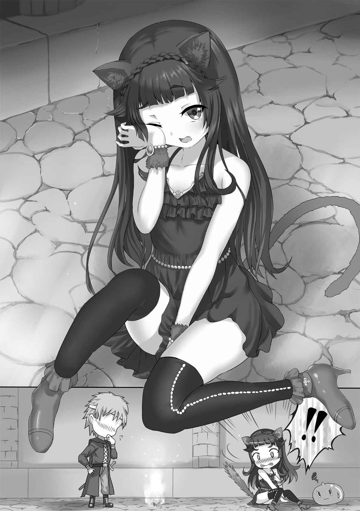
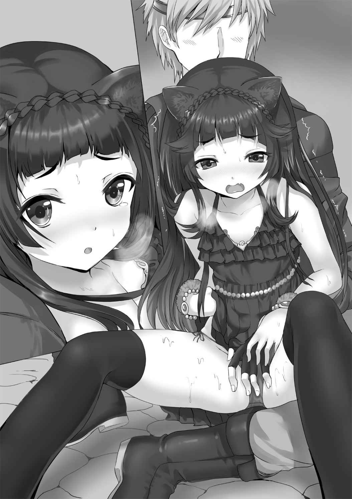
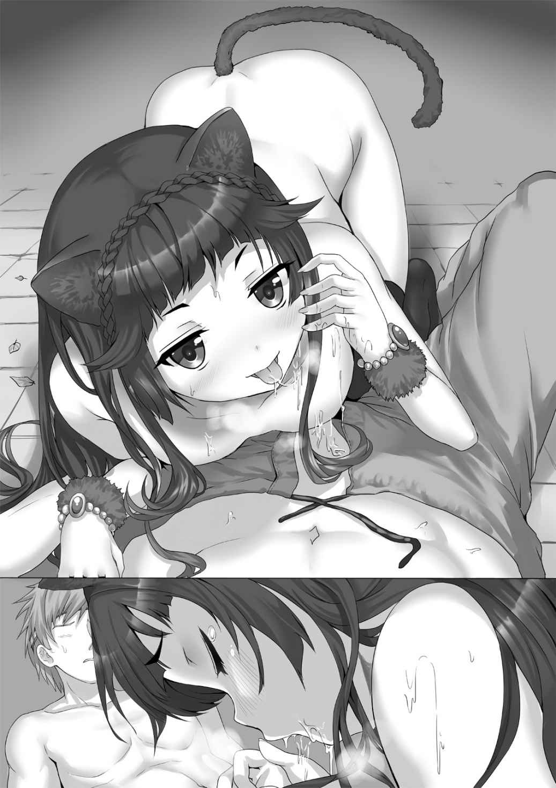

| 怖がり魔王と孤独な勇者 ～ケモミミ魔王さま、迷子になる～ (オシリス文庫) | |
| 桐刻 | |
| (2015) | |
怖がり魔王と孤独な勇者
～ケモミミ魔王さま、迷子になる～
著者／桐刻
イラスト／アルデヒド

オシリス文庫
本作品の全部または一部を無断で複製、転載、配信、送信したり、ホームページ上に転載することを禁止します。また、本作品の内容を無断で改変、改ざん等を行うことも禁止します。
本作品購入時にご承諾いただいた規約により、有償・無償にかかわらず本作品を第三者に譲渡することはできません。
本作品を示すサムネイルなどのイメージ画像は、再ダウンロード時に予告なく変更される場合があります。
本作品は縦書きでレイアウトされています。
また、ご覧になるリーディングシステムにより、表示の差が認められることがあります。
本書の内容はフィクションであり、登場する団体・店名・人物などの名称はすべて架空のものです。
むかしむかし、黒い虎のような姿をした巨大な魔王、アグラハブがいました。
魔王は強大な力とモンスターの大群を使って人間たちの世界を侵略しようとしましたが、勇者とその仲間たちによって倒されました。
魔王が倒されたことでダンジョンからモンスターが湧き出ることもなくなり、人々は平和な生活を取り戻しました。
しかしそれより数ヵ月後、再びダンジョンが起動し、モンスターが湧き出てきました。
人々は魔王が復活したのではないかと思い、震えあがりました。
◆◇◆Ｓｉｄｅ：魔王
広い、傷だらけの玉座の間を私は眺めた。
傷は石造りの円柱や大理石が敷き詰められた床にも残されている。
激しい戦いがあったことは明らかだ。
玉座に深く座り、私は脚を組んだ。
爪先が床に届かないがそれは仕方ない。本来この玉座は私よりも大きな存在が座るために造られているからだ。
いや、この私の内に眠る強大な力を考えれば見上げるほどに大きなこの玉座こそが私の椅子にふさわしいのではないだろうか。
魔王の城を守るためのダンジョンはすでに起動している。私は自分の横に置いている水晶球にゆっくりと指を這わせた。
「くっくっくっく......」
知らず含み笑いが漏れてくる。悪の魔王としては当然だろう。笑いは自然と大きくなる。そして笑い声は玉座の間に反響する。
「っふははははは！ あーっはっはっはっは、ごっほおっ!! げっほげっほげっほ、......けほっ」
げほっげほっげほっ！
な、なんでだ......。悪の魔王は三段笑いするのがお約束なのになんで失敗するんだ！
まだ咳き込んでる私の足元に、ぽいんぽいんと弾みながらスライムの子ども、ぽよがやってきた。
「大丈夫ぽよ？ ラビ様風邪ひいてるぽよ？」
「い、いや、べつに風邪は......そ、そうだとも！ 今日は少し喉の調子が悪いようだ！ けして大きな声で笑い慣れていないから失敗したんじゃないぞ！ うむ！」
風邪をひいているんだからしょうがないな、けほけほ、ごほんっ。
私は表情を引き締め、前を見つめなおした。
「くくく、魔王の城を守るダンジョンはすでに起動させた。魔王にダンジョンといえば、そう勇者だ！ 勇者はかならずダンジョンを攻め落としにくるはずだ！」
「どうしてそんなことわかるぽよ？」
「それがお約束だって父様が言ってたんだ。よくわからないが山があったら登りたくなるようなものだって」
「おー」
「勇者め、このラビフィア様を甘く見るなよ。魔王の娘としていままでにさまざまな教育を受けてきたんだからな。ダンジョンのトラップやモンスターをくぐり抜け、玉座の間に辿り着いたときがおまえの最後だ！ ぎったんぎったんのぼっこぼこだぁー！」
「おー！」
拳を握りしめる私の横でぽよはぽいんぽいんと飛び跳ね、私を鼓舞してくれた。
──私の名はラビフィア。獣の魔王アグラハブの娘だ。
数日前、私とぽよは魔王の城に戻ってきた。いままでは少し離れた場所に隠れて、魔族のメイドたちと一緒に暮らしていた。
城はとても傷ついていたが父様の姿はどこにもなかった。
その代わり、玉座の上に父様が大事にしていた水晶球がぽつんと置かれていた。
母様は私が生まれた直後に病で亡くなっていて、私の家族は父様しかいなかったのに。
とても悲しくなって、苦しくなって、私は水晶を抱きしめながら泣いてしまった。
......が、それで触れてはいけない場所に触れたらしい。
魔王が倒され機能が停止したはずのダンジョンが再び動き出してしまった。
水晶球の操り方はわからないが、私の体から常に魔力が水晶球へと流れ込んでいる。おそらくこれを破壊すれば魔力の供給も止まり、ダンジョンは再び動かなくなるだろう。
だけど、それは父様が大切にしていたものを壊すことだ。
そんなこと、できるわけ......。
「きっとこれは父様が言っておられるんだ、勇者を倒して仇をとれと」
「でも大丈夫ぽよ？ ラビ様、アグラハブ様と違って全然大きくないぽよ」
「う......」
私は自分の体を見下ろした。
脚のつけ根までほとんど障害物のない平坦な体。......それはどうでもいい。私は18で、本来終えていなければいけない成人の儀がまだということは、まだまだ成長の余地はあるのだからな、ふはは。
毛の生えていないすべすべとした白い、いまにも折れそうな手足。
私の顔や体は妖精族の母様譲りだ。父様譲りなのは頭の獣耳と尻尾だけ。
魔王アグラハブは私の数倍も大きな体をもっていた。
「......あ、案ずるな！ 体の大きさは確かに違うかもしれない！ しかし私の内には魔王アグラハブをも凌駕する力が眠っている！ 使ったことは一度もないがな！ ふはははははは！」
「おー！ よくわかんないけどすごいぽよー！」
「そうだすごいともー！ 勇者なんて指先ひとつで吹っ飛ばしてやるー！ ふははははっ、げほげほっ！」
げほっげほっ、けほん。
......笑う練習はあとにしよう。
私は玉座から飛び降りた。もちろん水晶球は玉座の上に置いたままだ。私が持ち運ぶには両手に抱える必要があるし、うっかり落として壊してはいけない。
それにこの椅子に座るべき存在は、やはり私ではないのだから。
「さて、行くとするか」
「どこ行くぽよ？」
「ダンジョンだ。新しい魔王として一度は見ておく必要がある。なに、大丈夫だ。ダンジョンのトラップやモンスターは管理者である魔王の周囲では発動しない」
玉座の間から城の出口へと歩き出すと、ぽよも私の背後を跳ねながら追ってきた。
魔王の従者としては頼りないかもしれないが仕方ない。私の存在は人間どころか多くの魔族にも隠されていたから。私のことを知っているのは死んだ父様と四天王、そして数人のメイドたちとスライムのぽよだけだ。
それでも魔王の娘として、いや、新たな魔王として凛と立つ姿を崩してはいけない。
「ラビ様の尻尾、ぼわぼわになってるぽよ」
「こ、こ、これは武者震いってやつだ！」
けして怖がってるわけじゃないんだからな！
○●○Ｓｉｄｅ：勇者
『いくら勇者と呼ばれていたセドリックでもひとりで魔王の城に行くなんて無謀だ』
直接は言われなかったけど誰もが遠まわしに俺に言ってきた。
大きな石で囲まれたダンジョンの入り口に俺は立った。
すぐそばには斬り伏せたばかりのモンスターが倒れている。
魔王アグラハブを倒したとき、ダンジョンの機能は停止し、モンスターが出現することもなくなった。
だからダンジョンからモンスターが溢れ出しているということは魔王の復活でもある。
ダンジョンは魔王の城の前に存在する。
それ以外にあるものは深い崖や毒草の生い茂る森。凶悪な魔獣が闊歩する尖った岩山。ダンジョンを通って城に向かったほうが安全だ。
しかしそれは魔王を倒そうとするものを誘い込むための罠だ。
一度探索し終えたとはいえ、かつての仲間たちがいたほうがいいことくらい、知っている。
だけど。
『しょうがないよね。絶対に一緒じゃないと嫌なんて言う権利、私たちにはないから。......それじゃ、さよならセドリック。元気でね』
愛想笑いを浮かべながら俺から離れ、別の冒険へと旅立っていった仲間たちの顔を思い出す。
笑みの向こうに隠されていた感情は──失望。
俺は旅に出た仲間の帰りを待たずにモンスターが溢れ出しているダンジョンの入り口に飛び込んだ。
この奥にいるはずの魔王を倒すために。
それがこの俺、勇者セドリックがやるべきことだ。
◆◇◆Ｓｉｄｅ：魔王
「うう～、寒いぃぃ......」
がたがたがたがた。
ダンジョンの冷たい床に座り込み、私は濡れた体を両腕で抱き込んだ。
えぇっと、どうしてこんなことになったんだっけ。
というかダンジョンに入ってからどれくらい過ぎたんだろう......。
「ダンジョンのモンスターやトラップは発動しないってラビ様言ってたぽよ。どうしてぽよたちを追いかけ回すぽよ～......」
私の隣に座ったぽよが疲れ果てた声で聞いてくる。
ここに入ってから私たちはモンスターに襲われ、トラップの仕掛けに引っかかりそうになってばかりだ。怪我がないのは奇跡的すぎる。
「う、うん。そのはずだったが......くしっ」
体が濡れているのは底に水がたまっている落とし穴に落ちたせいだ。その前にも動く骨の集団とか、大きなサソリとかに追いかけられたし。飛び出る槍にも刺されそうになった。......怖かった。
「耳も尻尾もぺったんこぽよ」
「言うな。自覚すれば惨めになる。......あ」
いきなり思い出した。
「父様が言っていた。ダンジョンの管理者は水晶球を持つと。あれがなければ管理者とは認められないんだ、ふぁっ......えっくちゅんっ！」
「どうして持ってこなかったぽよー」
「......だって落として壊したりしたらたいへんじゃないか。重かったし」
きゅ～。
切ない音がぽよのほうから聞こえた。
「......お腹すいたぽよ」
「ぽよはそこらへんの石ころでも食べてればいい」
スライム族にとっての食料は土や石だ。私が言うと、こちらをちらっちらっと確認しながらもぽよは床に落ちている石を食べはじめた。
「わ、私のことなんて気にする必要ないぞ！ 私は腹なんてすいて......」
きゅ～。
しかしその音はぽよではなく私の腹から聞こえた。
......う。私も石を食べることができたらなぁ。試しにひとつ口に入れてみようか。いやいや無理だし。いったいなにを考えてるんだ、私。
頭くらくらする......。さむ......。
いきなりダンジョンの壁が回転し、私の横顔に床が押しつけられた。あ、違う。これは私が倒れてしまったんだ......。
「大丈夫ぽよ？」
ぽよの声が聞こえるがどこにいるのかさえよくわからない。
「肉ぅ......肉食べたいぃ......スープだけでもいい......あったかいスープ飲みたいなぁ......そして風呂入ってもふもふベッドで眠るんだ......ああ！ 見ろ、ぽよ！ 目の前にシチューと風呂とベッドが出てきたぞ!!」
「それは幻覚ぽよ！ しっかりするぽよ！」
「ああ、きれいな花畑が見えるぅ......父様？ 向こうにいるのは父様なのか......!? 私もいまからそちらに......！」
「そっち行っちゃダメぽよー！ ラビ様ラビ様、ラビ様ー！」
こんなに眠いのにぽよの声ががんがん響く。
わかっている。......だけどもう。
──結局、私が魔王をやってもこんなものなんだ。
意識が闇へと落ちていくが、抵抗する気力はすでになかった。
○●○Ｓｉｄｅ：勇者
ダンジョンの中には"流れ"というものが存在し、モンスターにもトラップにも襲われない安全な場所がまれにできる。その場所を見つけたら地図に残し、休憩することを忘れてはいけない。
......まさかそこに女の子が倒れているなんて思わなかったけど。
女の子には獣のような耳と尻尾が生えていて、すぐ近くで彼女の使い魔と思われる小さなスライムが必死に彼女の名前を呼んでいた。
俺が近づくとスライムくんは震えながらも俺に立ち向かおうとした。
仕方ないから少し離れた場所に魔法で焚き火を作って、濡れている彼女の体を少しでも温めた。
敵意がないとわかってくれたのか、スライムくんは火から離れた場所から主人の様子を見守った。
やがて。
「......んにゅ......」
小さな声がこぼれ、女の子の獣の耳がぴくぴくっと動いた。
「にゅうぅ......」
体を丸めてうつ伏せになっていた女の子はもぞもぞと動き、よつんばいになったまま両手を前に出す独特な背伸びをした。そのあとは床に座りなおし、こしこしと目をこすっていた。

「......ふにゃあ～う」
さらにのんびりとした大きなあくび。
「ぶっ」
「!!」
あまりにも猫っぽすぎて思わず吹き出してしまった。
女の子は琥珀色の目を丸く見開き、こっちを凝視した。びっくりしすぎて尻尾がこれ以上ないくらいにぼわぼわに膨らんでいた。
うわ、ますます猫っぽい。
「にゃっ!? にゃにゃにゃ、何者っ、いたっ！」
ずざざざざっ！ がつんっ!!
女の子はすごい速さで後退して、頭を壁にぶつけていた。
「あ、ええと、大丈夫......？」
「だっ！ まっ、あ、うっ、うぅぅっ！」
「落ち着いて落ち着いて、怖くない怖くないからー。ほら、ちっちっちっちっ」
「ふしゃーっ!!」
ばちーん！
混乱している彼女に手を差し出してみるとおもいきり引っぱたかれてしまった。痛い。
「ふーっ！」
小さな体を丸めて必死に威嚇してくる。
だけど怖くない。むしろおもしろい。
さて、どうしようか。
「ラビ様ー！ 起きたぽよ？ 大丈夫ぽよ？」
なんて思っているとスライムのぽよくんが女の子の前へと飛び出た。女の子は一瞬びくっとするが弾き飛ばすことなくぽよくんを抱きとめた。
「ぽよ？ こ、こら、ちょっと待て！ 腕の中で跳ねるな！」
知り合いの姿のおかげで少しは落ち着いてくれたみたいだ。
あ、そうだ。たしかこの女の子はお腹がすいて倒れてしまったってぽよくんが言っていた。
俺は持ってきた荷物の中から紙袋を取り出して、その中からパンを出した。そしてそれを女の子の顔の近くまで持っていった。
「......くんくん」
女の子はパンの匂いをすんすんと嗅いだ。思わずそのパンを右へと動かしてしまう。女の子の顔もつられて右へと動く。パンを左に。女の子も左に。パンを上に。女の子も上に。
「............っ！」
女の子は目をカッと見開き、パンを奪い取った。
いけない、からかいすぎた。......でもおもしろかった。
「おいしいか？」
「............」
返事はなかったけど、はもはもと夢中になって食べてくれた。
「俺の名前はセドリック。きみの名前は？」
「......ラビフィア、だ」
食べ終わってからあらためて聞くと、警戒心が残る声で名前を教えてくれた。
「きみは......」
俺はラビフィアの頭の耳と尻尾をちらりと眺めた。
「きみは魔族かもしれないけど、まだ子どもだろう。ぽよくんだって」
俺の言葉を聞いた瞬間、ラビフィアはおもいきり不機嫌そうな顔になった。
「確かにぽよはまだ子どもだが、私はすでに18だ！ 立派な大人だ！ 父様が死ななければ成人の儀も行なう予定だったんだ！ ......高貴な魔族は寿命が長いからな。そのぶん成長も遅くなる。あと数年もすればこう、胸も尻も大きくなるはずだ」
ラビフィアは小柄な体で薄い胸を張った。18にしてはなんというか、膨らみというものが少し足りない。成長するというのなら成長するのかもしれないけど......。
「そのとおりだぽよ！ 嘘なんかじゃないぽよ！ これ以上成長しそうにないなんてことないぽよ！」
「そうだとも！ 本当はこれ以上成長する見込みがないわけじゃ......ってなに言わせるんだ、バカっ！」
「うわーん！ 怒られたぽよー」
真実はどうであれ元気になったみたいでよかった。
「とにかく。きみたちだけでこんなところにいたら危ないだろ。このダンジョンには敵味方関係なく襲ってくる強力なモンスターやトラップがうようよしているんだぞ？」
「そ、そういうおまえはこんなところになにしに来たんだ」
なにをするために、か。
「復活した魔王を倒しに」
俺の答えにラビフィアは肩をびくりと震わせて目を見開いた。耳はピンと立ち、明らかに警戒されている。
「お、おまえはもしかして......」
「勇者、だよ。そんなふうに呼ばれる前はただの旅人だったんだけどな」
「......そうか、おまえが......！」
ラビフィアは顔をうつむかせ、両手をぎゅっと握りしめた。
その小さな肩は小刻みに震えていた。
ほんと、どうしようかな。
「ああ、安心してくれ。倒すつもりなのは魔王とその仲間たちだけだ。魔族だからってだけで迫害する人もいるけど、俺はそういうんじゃないから」
「............」
なんて言っても信用されないかな。
俺は軽く肩をすくめてラビフィアがどんな反応を返してくれるか待った。
しばらくするとラビフィアは顔を上げて、視線を軽くそらしながらつぶやいた。
「......出られない。ちょっと入ったら迷ってしまったんだ。出口なんて、わからない」
「しょうがないな。俺も今回は仲間がいるわけじゃないしな......。一緒に出ようか」
「一度は助けてもらったけど、もう勇者なんかの力は借りないぽよ！ ラビ様は、まお、ぽよっ!?」
「ええい、黙ってろ！」
ぼいんぼいんと跳ね飛び不満を体全体で表わしているぽよくんの口を、ラビフィアは押さえつけた。そして俺にひきつった笑みを向けた。
「あ、ああ。私たちだけでは不安だ。勇者が同行してくれると助かる。なにせぽよは弱いスライム族の子どもだし、私もごく普通のか弱い魔族の娘だからな。敵意なんてこれっぽっちも、みじんもないんだからな、はっはっはー」
「そうか。じゃあ、とりあえず出発の準備をするから少し待っててくれ」
焚き火にしていた魔法の火を消してその場に置いていた荷物をまとめた。床には焦げ目が残っていたけど、消えないうちは目印にもなる。
ラビフィアはぽよくんを抱きしめて俺から離れた場所に立っていた。
顔を向けると引きつった笑みを浮かべるが、その耳はぺたんと頭にくっついていた。
そんなに怖がらなくてもいいのに。
◆◇◆Ｓｉｄｅ：魔王
「ラビ様、どうして勇者なんかの力借りるぽよー」
ぽよは私の腕の中でぶりぶりと機嫌悪くしていた。
あの勇者はいま、私たちより少し先を歩き、周囲を確認していた。
ダンジョンのトラップやモンスターは破壊したとしても一定時間が過ぎれば元に戻る。モンスターはダンジョンの中を常にさまよっており、一度通った道だとしてもうしろから奇襲される恐れだってある。......らしい。そんなこと知らなかった。
「力を借りるわけじゃない。あいつは油断しきっている。こちらをただの魔族の娘だと思っている。あいつがああやって探索しているところをこっそりと狙い討つつもりだ」
「おー！ なるほどぽよー」
「行き倒れたふりをしたのも勇者を油断させるためだ。くくく、私の演技にまんまと騙されおって」
「えぇっ!? 演技だったぽよ？ ラビ様はもう死んじゃうんじゃないかって本当に思ったぽよ！」
「そ、そうだとも！ 演技に決まってるじゃないか。魔王が行き倒れるなんてことあるわけない！ 敵を倒すなら味方ごとずんばらりという言葉もあるしな」
「おー。......それあってるぽよ？」
「あ、あってるに決まってるだろ！」
ぽよの表面をびよんびよんと引っぱっていると勇者は戻ってきた。
「きみたち、仲いいなぁ」
なにがおもしろいのかにこにこ笑っている。
「ああ、そうだ。きみのことはラビって呼んでいいかい？ 俺のことも呼び捨てでいいから」
「なっ!?」
なれなれしくするな！ 呼ぶなら『様』をつけろ！
思わず言い返しそうになる。......が、言ってしまえば疑われてしまうかもしれない。
「......わ、わかった。......セドリック」
しぶしぶ私が頷いたその直後、
ガチャ、ガチャ......。
「ひっ!?」
通路の向こうから嫌な音が聞こえた。
セドリックに助けて......い、いや、セドリックが演技していた私に騙される前、私たちはさんざんあの嫌な音の持ち主に追いかけ回された。
「静かにしてくれ。ここから動くなよ」
セドリックは腰にぶら下げていた鞘から長剣をすらりと抜き放ち、音が聞こえた方角へと身構えた。
やがて薄暗い通路の奥から骸骨の戦士、スケルトンが姿を見せた。しかも１体、２体、......た、たくさんいる!!
「～～～～っっ!!」
静かにしろ、動くなと言われたが、そもそもできなかった。
「タァッ!!」
セドリックはスケルトンの群れに向かって駆けた。スケルトンも恐ろしく俊敏な動きでセドリックを迎え撃つ。が、セドリックの動きはそれよりも数段速く、そして力強かった。斜め上へと振り上げられる剣のもとに骸骨の戦士たちは一閃で斬り払われてしまった。
......お、終わったのか？
モンスターたちは砂のような物体になり、さらさらとダンジョンの壁の中に溶けていく。
セドリックは振り向きながら剣を鞘へと納め、私に向かってほほえんだ。
どきっ。
「もう大丈夫だ。時間が経ったら復活することもあるから、ここから移動しよう。......大丈夫？」
「あ、う、うん、大丈夫だ。ありが......」
......ん？
どうして私は礼なんか言おうとしているんだ？
礼なんて言ってる場合か！ 殺すチャンスだったのに！ うしろから攻撃すればよかった！
「......た、助けてくれなんて言ってないっ！ 私が頼んだのは出口への案内だけだ！」
「ああ、べつに頼まなくても助けてたし。きみに怪我がなくてよかったと思うよ」
「うっ、うるさいっ!!」
私に怪我がなくてどうしてセドリックが喜ぶんだ！
「わぁん、苦しいぽよ、痛いぽよ、離すぽよ～」
「ご、ごめんっ！ 大丈夫か？」
いつの間にかぎゅうぎゅうに抱きしめていたらしい。私の腕の中でぽよがもがき苦しんでいた。あわてて離したがぽよは私から「ぷいっ！」とそっぽを向いてしまった。
そ、そんなぁ。
「......うう」
「きみたちって本当にかわいいなぁ」
「なっ!? な、なにを言い出すんだ、おまえは!!」
どきどきどきどき。
セドリックがへんなことばかり言うから顔は熱いし、胸の鼓動は速くなるばかりだ。
ううっ、くそっ！ こんなふざけたやつ、絶対に殺してやるんだからな！
──しかし。
「わあああっ!? た、宝箱に手を挟まれた!! い、痛いよぉ......」
「うわっ。大丈夫か？ 外すからじっとしてろよ。回復の魔法もかけるから」
通路の奥に置いてあった怪しい宝箱を開けて手を挟まれ、セドリックに怪我を治療してもらい。
「......よ、よーし。あっちにモンスターの群れがいるから私が囮になって............って、か、囲まれたぁ......！ や、やめろ、私は肉がついてないからおいしくないんだぞ！」
「ラビ！ すぐに助ける!!」
モンスターを呼び寄せるつもりが私だけがモンスターに囲まれてしまい、セドリックに助けてもらい。
「......うにゃ、う、動けない」
「あー。だからそこに触っちゃいけないって言ってたのに。聞いてた？」
「......聞いてはいたんだけど、その......」
飛び出る槍のトラップで殺そうとしたものの、刺されそうになったのは私だけで。スカートのうしろに槍が引っかかって動けなくなってセドリックに助けてもらった。
どうして私はあいつを殺そうとしてるのに助けてもらってばかりなんだ!?
......というか、半分くらいは殺すつもりもなかったんだが。
......だってボタンとか宝箱とかあったら気になるし。
「いいか、気になるところがあっても触っちゃいけない。音が聞こえても走っちゃいけない。びっくりしたからって大きな声出さない。モンスター呼び寄せることもあるから。押さない駆けないしゃべらない、で『おかし』だ」
魔王の娘であり、現在の魔王であるこの私を正座させて、セドリックはとくとくと説教した。
「......うう、わかった......」
屈辱だ！ 説教なんてほとんどされたことないのに！
「わかったなら、えーと......これ、やる」
セドリックは着ているコートの内側から小さな袋を取り出し、その中から焼き菓子を差し出した。
「どうして？」
「......餌付け？」
「えづけ？」
というものはなんなんだろう。菓子の名前だろうか。人間のやることはよくわからない。
まぁ、えづけはおいしかったしな。魔王を説教したことについては許してやろう！
○●○Ｓｉｄｅ：勇者
しばらく進んで俺たちは休憩した。もちろん安全な場所でだ。
魔法で作った焚き火を囲んで座る。トラップもなくモンスターも来ない場所だとわかっているけど、念のためいつでも立ち上がれるように待機しておく。
ラビフィアは焚き火の向こう側で俺が貸したコートを背中から羽織り、壁にもたれかかっていた。
「寝てていいよ。俺が見張りをしておくから」
「ベッドはどこだ？ こんなところで眠れるわけないじゃないか。寝る前に風呂にも入らないといけないんだぞ......ふぁ」
「こんなときにわがままな......横になってるだけでも疲れは取れるだろ。ぽよくんだって寝てるのに」
ぽよくんは焚き火から少し離れた場所で寝息をぷぅぷぅと立てていた。
「......うにゅ」
ラビフィアは小さくあくびをして、とても眠たそうに目をこしこしとこすった。尻尾までふらふらと揺れているのは眠気のせいなのか。
「......それにしても勇者というものは意外とバカなんだな」
「えっ。きみには言われたく......じゃなくて。どうしてそんなこと思ったんだ」
「行き倒れていた魔族の娘など放置しておけばよかったんだ。罠かも......あふ......しれない、のに」
「眠い？」
「ね、ねむく、などぅ......う」
ふにゃあ、とラビフィアは大きなあくびをするが、首を横に振る。
どんな生活をしていたのかは知らないけど硬い床の上で寝るというのはかなりの抵抗があるらしい。
だけどゆらゆらと動く頭はいまにも落ちそうで、見ているだけで危なっかしい。
「俺の肩くらい貸してやるよ。硬いかもしれないけど、壁に寄りかかるよりいいと思う」
「ばっ、バカかっ！ そんなことできるか！ 枕くらいある！」
「う～～、お、重いぽよ～っ」
ラビフィアはぽよくんが眠っていた場所まで移動し頭を無理やり乗せた。
しかしぽよくんは勝手に脱出し、結局ラビフィアはごつごつとした床の上で直接眠ることになった。
◆◇◆Ｓｉｄｅ：魔王
「体、痛い......」
硬い床の上で寝たせいであちこちが痛くなってるじゃないか。
確かに疲れは少し取れたが。
私たちは再びダンジョンの中を歩いた。
ダンジョンを歩けばモンスターと遭遇する。スケルトンにゴーレム、大きなサソリに自分の意思を持たないゴブリンたち。
ちなみに『モンスター』というものは自分の意思のない生物兵器だから、こちらの話す言葉なんてまったく通じない。
それらはすべてセドリックが倒した。倒されたモンスターは砂になり、ダンジョンの壁に吸収されるように消えていった。
「この中をうろついているだけならいいんだけどな。外にも出てくるから......魔王が復活したかどうかはわからないけど、ここの機能だけでも止めておかないと」
「えっ！ モンスターはダンジョンの外に出ているのか!?」
「そうだよ。だから復活したのがわかったんだ。......知らなかったのか？」
「......知らなかった」
勇者にとってダンジョンは攻略するもので、魔王は倒すもの。
父様が言っていたことを私はそのまま信じていた。
まさかダンジョンの外にモンスターが溢れているなんて、知らなかった。
「知らないなら、しょうがないか」
セドリックは軽く肩をすくめ、手元のメモとダンジョンの中を見比べる作業に戻った。どうやらそのメモは以前の探索のときに作ったものらしい。
先代の魔王を倒したときに。
知らない。私はなにも知らない。
悪の魔王がひどいことをしていたのは知っているが、どんなひどいことかは全然知らない。
だって私はなにも知らないあいだはとても幸せだったから。
だから一度も知ろうとしなかった。
「と、......魔王は人間にとってどんな存在なんだ？ どんなことをしていたんだ？」
「いろいろあるけど......。モンスターの大群を使って人間の国を襲わせたり、かな。騎士団だけでなく、そこに住んでいた人たちは女子どもかまわずにね」
「ひ、ひどいな......それは。モンスターの大群を使うなど......こ、怖かっただろうな......」
モンスター１匹見るだけであんなに恐ろしいのに大群に襲わせるなんて。しかも女子どもまでも。
嘘だなんて言えない。私はダンジョンに入って嫌になるくらい危険な目に遭った。
ダンジョンがこんな危険な場所だなんて。
......いや、私は"怖い"ということがどんなことかわかっていなかった。
「きみがやったことじゃない。同じ魔族だからってきみが気に病む必要はない」
「だけど、私は......！」
私は、なんだ？
魔王の娘だと名乗ればいいのか？ なにも知らずにダンジョンを起動させたと言えばいいのか？ ......それとも、本当になにも知らないままぬくぬくと育ってきたことを話せばいいのか？
私は、私は......！
「わあああああああんっっ!!」
頭がぐちゃぐちゃになって、逃げ出したくなって、思わず走り出していた。
「あ！ だからいきなり走ったらあぶな......！」
バタンッ！ ガコッ！
「わあああああああぁっっ!?」
走り出した直後、私の足元の床が消えた。私は落とし穴に落ちかけようとしていた。
「ううっ、うぐぐぐ......」
必死に穴の縁をつかむが、指先がじわりじわりと滑り落ちていく。穴の底から冷たく湿った空気が吹き上げてくる。
いったいこの下にはなにがあるのか。考えただけで背筋が冷たくなる。
落ちたら、どうなるんだ？
「待ってろ！ いま助けるから！」
「ダ、ダメ、だ......落ち、る......！」
ずる、ずる......がりっ！
私の指先は穴の縁から外れ、とうとう私の体は宙に投げ出された。
もう、ダメだ......。
怖すぎて怖すぎて、私の意識はすぅっと遠くなった。
──薄れていく意識の中でセドリックが腕をつかんだような気がした。
「う、うぅ......」
暗い穴の底で私は目を覚ました。
どれくらいの高さから落ちたのかはわからないが、あまり痛くはない。
「くぅ......」
うめき声が私の下から聞こえた。
視線を向けると、私の尻の下でセドリックが倒れていた。腕をつかまれたのは気のせいじゃなかった。落ちているあいだに前後をうまく入れ替えてくれたんだ。
「わっ!? お、おい、大丈夫か？」
あわててセドリックの上から移動した。
「大丈夫だよ......俺は鍛えてるから......つつ。手、つかんだけど間に合わなかったな」
頭を押さえながら起き上がるセドリックに大怪我はないようだが、まったくの無事というわけではないようだ。セドリックは自分で回復の魔法を使った。
「そ、その、なんだ......えっと」
「気にするな。トラップにひっかかっただけなんだから」
ぽふん。なでなでなで。
セドリックの手が私の頭を撫でた。
反射的に私はその手を振り払ってしまった。
「な、なにをするっ！」
「元気そうだな。よかった」
嫌味でもなんでもなくセドリックは笑った、ような気がした。
なぜならこの階層は上の階層に比べてずいぶんと暗かった。セドリックの顔をはっきりと見ることはできなかった。
「ここは......俺も来たことない場所だ。困ったな、道がわからない」
「なっ」
思わず天井を見上げてしまった。
「ラビ様ー！」
「うにゃっ!?」
しかしその途端に顔の上に軟体が降ってきた。さすがに痛いし重い。
「置いてくなんてひどいぽよー」
「それは悪かったが、飛び降りるなら前もって言え！」
ぐいぐいとぽよの顔を引っぱっていると、セドリックはくすくすと笑っていた。
だからなにがそんなに楽しいんだ！
○●○Ｓｉｄｅ：勇者
いままでいた階層には壁に明かりがついていた。
もちろん侵入者を歓迎するためじゃなくて、侵入者を知らないうちに油断させて罠へと誘導する仕掛けだ。
だけどこの階層に明かりはついておらず、俺たちは光る魔法の短剣を明かり代わりに前へと進んだ。
そしてラビフィアは。
「怖いのはわかるけど......せめて服から手を離してくれないか。いざというとき動けない」
俺の着ている厚手のコートをしっかりと握りながらびくびくおどおどと歩いていた。
「こ、怖くなんか......！」
説得力なんてまったくない。
尻尾をぎゅうと握りしめながら歩くラビフィアの獣耳は頭にぺたんとくっついていた。
「そうだぽよー！ ラビ様は暗いとこが苦手なんかじゃないぽよー！ んぐんぐ、夜寝るときも明かりをつけないと眠れないわけじゃないぽよー！ もぐもぐ......ぷう、暗いからへんな味の石、食べてしまったぽよ......」
「そっ、そうだともー！ 夜眠るときは明かりをつけてぽよを抱きしめて、ってなに言わせるんだ！ ......というか食べながらしゃべるな。そういう行動は品がないというんだぞ」
「スライムには関係ないぽよー」
ぽよくんは大丈夫そうでよかった。
◆◇◆Ｓｉｄｅ：魔王
暗闇の中を進んでいると自分がどれだけ歩いたのか、どれだけ時間が過ぎたのかわからなくなってくる。
知らないことばかりの私の不安をこれでもかと煽ってくる。
しばらく歩くと、安全な場所を見つけたからとセドリックは休憩することを提案した。
ほかのところと変わったようには見えないが、セドリックが言うのなら安全なんだろう。
セドリックが魔法の焚き火を作ると、暗かったダンジョンの中がとても明るく照らされた。
「......ほ」
私はこっそりため息をついた。
べ、べつに安心したわけじゃないんだからな！ ちょっと疲れただけだ！
「......ぽよー」
ぽよはスライム族だから火が苦手だ。だから火から少し離れた場所でまた石ころを食べ始めた。
私はセドリックから少し離れた場所に座った。
「......あのな、セドリック」
「ん？ どうした？ ここは安全だって言っただろ？ まぁ、絶対とは言いきれないけどね」
「そ、そうじゃなく！ そうじゃなくて、その......ぐ......」
私はなにを言いたいんだ。自分でもわからない。
結局はいろいろ助けてもらってること。魔王のことなんてなにも知らなかったこと。
ぐるぐるした気持ちが胸につまって、苦しい。
私はこいつを殺さないといけないのに。
「......ぽ、よ......ううっ、くるし、ぽよ......」
離れた場所で石ころを食べていたはずのぽよがうめき声をあげていた。
「ぽよ？ どうしたんだ？」
私はあわててぽよへと駆け寄った。
「......お、大きく......なるぽよ......」
「おお、ぽよ！ もしかして成体になるのか!?」
「成体に？」
セドリックが怪訝そうな声をあげる。
「うむ。スライム族は脱皮を繰り返して大きくなる。とくに成体になるときはいままででいちばん大きな脱皮をし、苦しみも伴う。がんばれ、ぽよ！ ひっひっふー、ひっひっふー、だ！」
「それ、なにか違う気もするけど......」
私は手を握りしめてぽよを応援した。
常に一定の距離を保っていたメイドたちと違い、ぽよは幼いときから私のすぐ近くにいてくれた。
どんな苦しみも一緒に乗り越えたいと思っている。
ぽよはぶるぶると体を震わせていたが、やがてその体はぐんと大きくなった。
ぐん、ぐん、ぐんぐんぐんぐん......！
「成体ってこんなに大きいのか？」
大きくなったぽよの体を見上げながらセドリックは聞いた。
ぽよの体はいつの間にかセドリックの倍以上に膨らんでいた。
「い、いや。長く生きれば大きくなることもあるが、成体になったばかりは子どもの頃よりひと回り大きくなるだけだ、が......ぽよ！ どうした大丈夫なのか!?」
ぽよがこんなになるまで私は気づけなかったなんて......！
私は大きくなったぽよの体に抱きついた。
その瞬間、大きくなったぽよは私へと覆いかぶさってきた。
「わあああっ!? な、なにをっ、うひゃっ」
手足や体にゲル状の物質が絡みついてくる。抜け出したくても抜け出せない。体を自由に動かすことさえ。
「んぐぅうっ!? げほっ、なにをする、んっ、やめろ......っ！」
ぽよの一部が私の口に飛び込み、私は思わず咳き込んでしまった。
なのにぽよは、いや、すっかり理性を失ってしまった巨大なスライムはドレスの脇の隙間から軟体を滑り込ませてくる。
「ひぅっ！ ばかっ、そんな、とこ......っ！ やっ、ああぁっ」
べとべととした粘液を含んだ軟体が私の肌の上をずるずると這いまわる。気持ち悪い。
ぽよの体はすべすべしていて、抱きかかえるとひんやりとして気持ちよかったのに。
視界の端っこでセドリックが剣を構えているのが見えた。
「だ、ダメ......！ 絶対にダメだ！ げほっ」
スライムの中で溺れながらも私は叫んだ。
「ぽよは私のたったひとりの親友なんだ！ ぽよがいなくなったら私は......！ だから、ひゃうっ！ だからぽよを殺すなら、私ごと殺せ！」
ぽよを殺してまで私は助かりたくない......！
肌が熱い。粘液が触れた場所が熱を持っている。
きっとこれは肉を溶かす液なんだ。私はぽよにじわじわと食われてしまうんだ。
「ンッ、ひぅんっ！ あっ、あっ、だめ......！ やだ、ぽよ、やだって......ふぁああんっ!!」
冷たい軟体が乳首をぐいぐいと押し潰しながら優しさのかけらもなく進んでいる。なにかを探しているようだけどなにかはわからない。冷たいはずなのに、ちくちくピリピリした感触がいつまでも乳頭の先に残って、熱い。
「やぁあっ」
知らず腰が浮き上がり、その腰の周辺にさえも入り込んだ軟体がまとわりつく。
腰だけじゃない。
「にゅうっ!? み、みみっ！ やっ、耳やだって、前から言ってる、のにぃ......！ あっ、あぁあっ、ふにゃううぅぅ......」
両耳の中で細められた軟体が蠢いた。どこよりも感覚が鋭くなっている耳朶を執拗にくすぐられ、ぞくぞくとした寒気のようなものが背筋を駆けた。指の先では届かない鼓膜の周辺までちろちろと浸入され、私はぶるぶると手足を震わせた。
耳、触られると嫌だって前から言ってたのに......！
ぽよは私のことなんて忘れてしまったんだ。もうどうでもいいんだ。
口からは獣の鳴き声のような悲鳴が勝手にこぼれているというのに、私の心を埋めつくしていたのは悲しみや寂しさだ。目からこぼれる涙は生理的なものだけじゃない。
「わぁっ！ ば、ばかっ！ そこ触っちゃだめって言われて、やっ、ひゃううっ」
脚は膝の上まで軟体の中に埋もれていた。
しかしどろどろとした半固体は太ももを伝って脚のつけ根まで這い登ってこようとしていた。そこはへんに触ると病気になるから触っちゃいけないって言われていたのに......！
「にゃあっ!? やっ、あっあっ、だめって......！ んにゅっ！」
私の声なんてかまわずに、軟体は下着の上から脚のつけ根にある割れ目をぐいぐいと押さえ込んだ。まるでその中に入ろうとしているように。じゅくじゅくとした粘液が敏感な箇所に染みて、全身から力が抜けるようなしびれが走った。
「ンにゅううッッ!! ......ふぁ、んん......も、やだ......！」
涙が溢れてぼんやりとにじむ視界の端っこで、セドリックはいまだに立ちつくしていた。
なんだ、セドリック。まだこんなところにいたのか。
こんな姿見せたくないなぁ。
思考さえもなんだかぼんやりしてきて、うまく考えることができない。
だけどセドリックが剣を振り上げる姿だけは、はっきりと認識することができた。
──やはりおまえは勇者なんだな。
そうやって私の大切なものを全部奪っていくんだ。
私はぎゅっと目をつぶった。
目を開けてすべてが終わっていたら、今度こそ勇者を殺す。私の命に代えてもだ。
○●○Ｓｉｄｅ：勇者
グチャッ！ ......カタンッ、コロコロコロ......。
俺は大きくなりすぎたぽよくんの体に剣の"柄"を振り下ろした。
ラビフィアを拘束していたべちゃべちゃの軟体が急速に縮んでいく。
「......え......？」
「どいて！ 回復魔法を使う！ まだ間に合うから！」
呆然としたままのラビフィアを軽く押しのけ、俺は元の大きさに戻ったぽよくんへと回復の魔法をかけた。
半分ほど潰れかけていたぽよくんの体が少しずつ張りのあるボールのような姿に戻っていく。もし死んでいたら回復魔法は効き目がない。
「......うん、もう大丈夫だ。吐き出させて傷も癒したから。しばらくは目を覚まさないかも、だけど」
「吐き出させ、た？」
焚き火の近くには宝石が半分埋め込まれたような石が転がっていた。もしかしたらあれはダンジョンを構成する一部なのかもしれない。暗闇の中であれを食べてしまったからぽよくんは暴走してしまったんだろう。半透明の体の中で、へんに光っていたから見つけることができた。
「......助か......？」
まさかどちらとも助かると思っていなかったのか、ラビフィアは目を回しているぽよくんと俺のほうを何度も交互に見ていた。体中がまだべとべとの粘液に濡れているというのに。
「ぽよくんは大丈夫そうだけどラビも大丈夫か？」
「う、うん、だ、大丈夫だっ。......えと、セドリック。あの、私は、その......」
「ん？」
「た、助けてもらえるなんて全然思ってなくて、だから......ぽよも私も、た、助けてくれて、あ、あ、ありっ............ありが、とう......って」
「ラビフィア......」
琥珀色の目を潤ませながら顔を赤く染め、軽く視線をそらしながらラビフィアはつぶやいた。
正直言ってラビフィアは、かわいい。
小動物のような愛らしさがあるけどもちろんそれだけじゃない。
艶のあるまっすぐな黒髪も丸い琥珀色の目も、頭の獣耳もスカートから伸びる長い尻尾も。胸が小さいことを本人は気にしているみたいだけど、スラリと細い体はとても美しいと思う。
偉そうなくせにバカっぽいとか、必死に隠そうとしているけど考えていることは耳と尻尾のせいでバレバレとか、そういうとこもかわいいと思っている。
そんな女の子が照れながらお礼を言ってくる。
見ているだけでこっちの顔まで熱くなってくる。
......なによりもついさっき、スライムに陵辱されかけている姿まで見てしまったせいで。
「............」
ラビフィアはしばらく視線をさまよわせていたけど、やがて黙って俺のほうを見つめてきた。
その瞳はとろんと潤んでいて、ピンク色の小さな唇はなにかを待つように薄く開かれている。頬はほんのりと桃色に染まり、......って。
「大丈夫か？ 顔、赤いぞ？」
「赤い、か......？ 自分ではわからない......確かに熱い、が」
小さく開かれたままの唇からは荒い息がはぁはぁとこぼれていた。さすがに様子がおかしい。
「熱、あるんじゃないのか？ 暴走してたぽよくんの体液に毒とかあったんじゃ......」
俺はラビフィアの額に手を乗せた。
「にゅうっ」
「あっ！ ごめ......！」
高い声があがって思わず手を離した。
ラビフィアは荒い呼吸を繰り返しながら顔を赤くしていた。
無遠慮に触ったせいで怒っているというわけではなさそうだ。
「体、熱くて、ど、すれば、いいか......毒、が体にまわってる、のか？」
ふら、とラビフィアの体が傾いた。思わず受け止めた。腕の中のラビフィアは熱い息を吐きながら俺の体に顔を、いや、全身をこすりつけてきた。厚手のコートのせいで熱も柔らかさもほとんど感じなかったけど、そんなことをされれば必要以上に胸が高鳴る。
「......触って......？」
焦点が合わない瞳で俺を見つめながらラビフィアはつぶやいた。
は、と熱いため息を吐きながら頭をひたすらにこすりつけてくる。
「触られると、気持ち、いぃ、から......もっと触ってほしい、んだ......」
おそるおそるラビフィアの首筋を撫でた。
「んンッ」
短い声があがった。しかしラビフィアは俺の手を振り払うことなく見上げてきた。もっと、と蕩けた琥珀色の目が訴えていた。
揺れる尻尾が腕にしゅるしゅると絡みついてくる。
ラビフィアの体になにが起こっているか、俺はやっと理解できた。
「......わかった」
俺はラビフィアの後頭部を左肩に乗せるように少しだけ斜めに抱いた。ラビフィアはおとなしく体重を任せてくれた。
「こういう毒は待ってるだけじゃ苦しくなるだけで、何度か発散させる必要があって、だから」
「？」
「ご、ごめんっ」
俺はミニドレスの上から小さな胸に触れた。
「やっ、ううんっ」
軽く触れただけだというのにラビフィアの口から甘い声が漏れた。
揉むというよりもただ撫でつけているとラビフィアは首を横にいやいやと振った。
「それ、やだ......じわじわして。直接、いいから、早く......」
「......ごめん」
こんな中途半端なこと、余計に苦しませるだけだってわかっていたのに。
俺は覚悟を決めてドレスの隙間から手を差し込み、直接ラビフィアの肌に触れた。
汗と粘液に濡れた肌が手のひらにひたりと吸いついてくる。本当にささやかな膨らみが指の腹にじわりと触れた。そして指先にすでに硬くなっている乳首が、ひくんと。
「ひゃうぅっ」
本当に爪の先をかすめただけなのに、ラビフィアはびくびくと震えながら身悶えた。
そのまま手のひらで乳房を押し潰すように揉みこみ、豆のような乳首をきゅっとひねった。
「んうっ！ やっ、あっ、あっ」
乳首を指の腹と腹で押し潰した。こり、こりと確かな感触が指先に伝わる。手のひらに触れている小さな乳房はふるふると震え、ラビフィアの感じている快感を直に伝えてくる。
指の腹だけを埋める未熟な柔らかさが正直言って心地よかった。
親指の爪を使って、乳頭のへこみをぢりっと引っかいた。
「んんんんっ！」
軽く唇を噛みながらラビフィアはびくびく、びくんっと強く震え、その直後にぐったりと力を抜いた。
たぶん軽くイってしまったんだ。
胸だけでこんなになるなんて、やっぱり異常だ。
「セド、リックぅ......ここも熱いよ......うぅ」
急にラビフィアは乳房の上に重ねたままの俺の手をつかんだ。そしてそのままスカートの内側にある自分の脚のつけ根まで持っていった。
「......ぁ......あぁっ、ふぁ......」
荒い息をはぁはぁと繰り返しながら俺の手を動かし、粘液と愛液でぐっちょりと濡れた性器を下着越しにこすりつけてくる。
「ラ、ラビ!? い、いくらなんでも......！」
思わず声をあげると、ラビフィアはとろんとした目で見つめてきた。いったいなにが悪いのだろうという無邪気な顔をしている。

「んっ、んぁっ、あっ、あっ」
短く嬌声をあげながらラビフィアは俺の手を使って自慰をしていた。
口を小さく開け、は、は、と息をこぼし、まるで快楽だけを求める獣のように。
ひたひたに濡れた下着が、熱くなった淫唇がくちゃりくちゃりと手のひらに押しつけられた。
俺は自分で手を動かし、中指を、く、と折り曲げた。
「にゃぁあぁっ！ ......やぁ......っ」
割れ目の先端をこすった瞬間、ラビフィアは子猫のような悲鳴をあげた。
ラビフィアの下着は腰の結び目をほどけば簡単に脱げるものだった。
愛液を吸いつくしている下着をしゅるりと脱がした。
フレアのスカートの向こうに薄く生え揃ってる陰毛と小さな割れ目が見えた。陰毛を軽くかき分け、割れ目の中へと指先を埋めた。
「ふにゃぁあぁ、や、セドリック、そこ、んっ、もっとぉ......んうううっ」
ラビフィアの頭がふるふると横に振られ、指先が触れている淫唇からいま以上に愛液がとぷとぷと溢れてくる。指先に絡みついてくる粘膜はラビフィアが雌だってことを嫌でも感じさせてくる。
俺は愛液の中で勃起しきっているクリトリスを親指で軽く潰した。
「にゃぁあああああっ！ あっ、あぁぁあっ、ひうっ」
ラビフィアの白い喉が仰け反る。俺は淫唇に触れている手とは逆の手でラビフィアの小さな乳房に触れ、乳首をぎゅうと押し潰した。
「ふにゃあぁああんっ!! あっ、あっ、やらっ、あっ、うにゅううぅぅ......!!」
ラビフィアの全身がぐねぐねと身悶える。耐えられない、なんてことは言わなくても全身から伝わってくる。頼るものがないラビフィアはフレアのスカートを両手で握りしめていた。
「あぁぁっ、あっ、せ、せろ、りっふ......！ やらって、くるひ、よぉ......！ んんっ、ふぁっ、待って、て......ふにゃっ!? あっ、あぁっ、ふやぁああっ」
荒い呼吸の合間にろれつの回らない声で俺の名前を呼んでラビフィアは苦しさを訴えてきた。
なのに指の動きは止まらない。
親指の腹でクリトリスをぐりっと潰しながら人差し指と中指で淫唇の中をかき出すように指を往復させた。指を粘膜へと押しつけるたびに粘膜がひくひくと震え、同時にラビフィアの全身も震える。
俺はラビフィアを楽にしてあげたいのか？ それとももっと喘ぐ姿が見たいのか？
......自分でもよくわからなくなってきた。
「あっあぁあっ、れちゃう、れちゃうってば......あっ、あぁっ、やぁあん、んんンッ！ にゃ、にゃぁあああああぁぁぅ......っ!!」
ぴゅっ、ぴゅっ、ぽたたたっ。
割れ目の中から透明な液が弧を描きながら飛び出してダンジョンの床に染みを作った。
「......あぁ......んん......ふあ......」
はぁはぁと荒い息を繰り返しながらラビフィアは俺の体に背中を任せた。薄い胸が激しく上下していた。
ほのかに甘ったるい雌の匂いが鼻腔をかすかに刺激した。
「......セドリック......ダメ......体の奥、じんじんする......指じゃ届かないよ......セドリック、セドリックぅ......」
俺のコートにすがりつきラビフィアはぐすぐすと泣いていた。
きっとラビフィアを楽にするためならこのまま手で何回かイかせるだけでいい。
俺のことなんてラビフィアには関係ない。
そんなことは充分にわかっているのに──。
「うん、わかった、ラビ。楽に、してあげるから......」
息も絶え絶えに答えた俺は、しがみついているラビフィアの体を少しだけずらし、ズボンの中から自分のペニスをさらけ出した。いまにも汁がこぼれそうなくらいに勃起していた。
頭の芯が緩んでしまったようでうまく考えられない。
ラビフィアの胎内に俺自身を深く埋めることがとても自然なように思えた。きっとラビフィアを発情させている毒に俺もあてられてしまったんだ。
......それに仕方ないじゃないか。だってラビが苦しそうにしているから。
だからこれはラビを助けるために必要なことで、
そんなの嘘に決まっている。
俺はこの瞬間、ラビフィアを犯したくてたまらない。
「............？」
勃起したペニスをラビフィアは不思議そうに見ていた。
「──ごめん」
俺はラビフィアの腰をうしろから片手で抱えるように持ち上げた。もう片方の手でペニスの陰茎を支え、どろどろに蕩けきった割れ目に先端をつぷ、と埋めた。
「ひにゅっ」
ラビフィアは小さく悲鳴をあげた。
腕に抱えたままのラビフィアの腰をゆっくりと落とす。
つぷり、つぷり......。
自分からはよく見えなくても亀頭が淫唇を分け入るのを感じる。腕の中のラビフィアは小さく震え、ラビフィアの膣はそれ以上にびくびくと震えていた。
「にゃぁああぁうっ！ やっ、は、入ってくる......セドリックのが、んっ、入って、あっ、にゃっ、んんうぅぅっ」
戸惑いを多く含む嬌声がこぼれた。
ラビフィアの体は小さくて軽い。淫唇の奥だって同じように細くて小さい。秘肉はゆっくりと侵入する亀頭をしっかりと挟み込み、カリ首の裏側までもまるで舐め上げるように刺激を与えてくる。
だけど侵入はすぐに止まる。亀頭の先に処女膜の存在を感じたからだ。
どうしようかと一瞬だけ思った。一瞬だけ。
......こんな状態で我慢なんてできるわけがない。
ラビフィアの腰を支える手に、ぐ、と力を込めた。ぶつっ、となにかを裂いた感覚は確かに伝わってきた。
「んにゃああっ!? にゅ、んゆううううぅぅぅうっっ!!」
ラビフィアの喉から悲鳴があがった。秘肉と秘肉が半分も埋もれていないペニスを挟み込んでぎゅうぎゅうに締め上げてくる。太ももにも力は込められ、その力は陰茎にも圧力を加えてくる。さすがにきつい。きついけど、気持ちいい。
この小さな体を乱暴に揺り動かしてそのまま射精することができたら。
そんな衝動は無理やりに押さえ込み、ラビフィアの体を膝裏ごと抱きしめてしばらく耐えた。
「......ふぁ......あ......んん......」
腕の中のラビフィアはひゅうひゅうと浅く速い呼吸を繰り返し、細い肩をびくっびくっと震わせていた。
「動かすよ」
「......んにゅっ」
ラビフィアは顔を小さく動かした。もしかしたらそれは痛みか、別の感覚に耐えているうちに勝手に動いたものかもしれない。
だけど俺はそれを承諾と受け取って抱きしめているラビフィアの体をさらに奥へと沈めた。
「みぃいっ!? は、はいりゅ、ま、まだっ、にゅううっ！ まだ、入る？ ......あっあああぁぁっ、にゃあぁっ！ あぁっ、あつい、熱いよぉ......っ！ んくううんンッ!!」
ずぶ、ずぶ、ずぶ......。
愛液で満たされたラビフィアの膣は意外なくらい簡単に亀頭を陰茎を飲み込んでいく。だけど秘肉は左右から前後からペニスに圧迫を加える。ずくん、ずくん。鼓動と一緒に脈打つ膣の内壁がギチギチに俺自身を絞め上げた。
「ぅにゃぁあああんんっ!!」
膣の最奥をずん、とひと突きするとラビフィアの体は仰け反り、長い黒髪がふわりと舞った。視界の端では長い尻尾がラビフィアの体と同じように硬直してぴくぴくと震えていた。
「ラビフィア......」
俺はたまらなくなってラビフィアの肩に顔を埋めて白い首筋を軽く噛んだ。
「んんっ！」
斜めうしろから見る横顔は唇をきゅっと噛みしめていた。
長いまつ毛が伏せられた瞳からは涙がぽろぽろとこぼれ落ちている。
破瓜の直後のラビフィアの横顔はとてつもなく愛らしかった。
抱えている膝裏をゆっくりと揺れ動かした。
「にゃああぁっ！ んぁっ、あぁっ、あっあっあっ、んにゅううっ！ ああうぅぅ、う、動いてる......ひぅっ！ やっあぁあっ、ふぁあぁああっ！ ......セド、リッ、うにゃぁああっっ!!」
ほんの小さく動かしているだけなのにラビフィアの口からさっきよりも強い嬌声がこぼれた。
「んんにゅううううっっ」
びくびくびくっ！
ラビフィアの体が強く震えた。陰茎にぴったりと触れている粘膜から愛液がとぷとぷと溢れ出る。直接伝わるヒダヒダのうねり。間接的にペニスを圧迫する胴体の震え。太ももに力が加わるだけで淫唇はペニスの根元をぎちっと絞め上げた。
ひどい痙攣のあとにラビフィアはぐったりと体を任せてきた。
「......体、壊れちゃ......おかしくなる......んっ」
は、は、とラビフィアは熱い息をこぼしながらかすれた声でつぶやいた。
防御用の繊維が織り込まれたコートは熱も柔らかさもほとんど打ち消してしまう。だけど口からこぼれる熱気はわずかだけれども俺の顔をくすぐった。はふ、とこぼれるか細い呼吸は、もういまさらどうだっていいじゃないか、このままこの魔族の娘を犯しつくしてしまおう、なんて悪魔の囁きを呼び起こす。
どうしようか、本当にそうしてしまおうか。
本当にラビフィアを発情させている毒に俺もあてられてしまったんだろうか。
俺の眼前では獣の耳がひくひくと震えていた。好奇心さえ我慢できなかった俺はその端っこを軽く噛んでしまった。
「ひにゃあああああっっ!?」
強い悲鳴があがってラビフィアの体がびくんっと跳ねた。体と体のあいだに挟まれていた尻尾はぼわっと膨らんだ。軽い痙攣を続けていた膣の内壁が再び激しくうねっていく。たっぷりと溢れた愛液が接合部からとぷとぷとこぼれていた。見えないけれど、きっと床の染みは広がっていることだろう。
「み、みみ、やっ！ やだ、せろりっく......！ ふえぇぇ......っ」
俺の腕をつかみながら震えるラビフィアの声はまるで泣き声のようで。
じくん、と胸が痛むのと同時にすべてをむちゃくちゃにしてしまいたいという欲望が頭をぐらりと傾かせる。
そんな衝動と戦っているせいか逆に体を少しずつしか動かせない。
ゆるい、ゆるい刺激のせいで絶頂までは辿り着けない。
......はずだったのに。
「んあっ！ あっあっあっ、にゃうぅっ！ あっ、んんっ、あっあっ、......ふぁ......っ」
腰を動かしていたのはラビフィア自身だった。
ラビフィアの脚を抱き込んでいる俺の腕をつかみ、背中を俺の胸へとこすりつけながらラビフィアは自分で腰を動かしていた。
ぐちゅっぐちっぐちゅっ、ぐじゅっ！
聞いているだけで恥ずかしくなりそうな淫乱な水音が静かなダンジョン内に響く。
「やだっ、こわれちゃ、壊れちゃうのにぃ......ひぅっ！ 体、勝手にうごくっ、ふぁっ、んんンッッ!! ひゃぁあっ！ あっ、ああっ、ぅああっ、んゆううぅぅうっ」
動かしているのは自分なのにラビフィアはむずかる子どものように頭を振った。
は、は、は、は、と餓えた獣のような荒い息が小さな唇からこぼれ続けている。
処女を失ったばかりのラビフィアは自分で腰を振り、淫らな粘膜をこすりつけてひたすらに本能のままに悦楽だけを求めていた。
「......ラビ......ラビフィア......っ」
俺は名前をつぶやきながらラビフィアの腰を激しく揺り動かした。下から最奥をえぐるように突き上げた。見えないけれどわかる。勃起して感覚が鋭くなっている亀頭が膣の内側をごりごりとえぐっているって。緊縮する小さな膣がより強く陰茎を引き絞っていることも。
ぐちゅぐじゅぐちゅぐちゅぐちゅぐじゅぐじゅぐちぐじゅっ。
粘膜と粘膜がこすれる。愛液がこぼれている。いやらしい水音が奏でられている。ダンジョンの壁どころか俺の脳内にも反響して現実なのか幻聴なのかそれとも願望なのかもわからなくなる。もうどうでもいい。
もしいまの瞬間に願いが叶うのなら男根を根元まで咥え込んで乱れるラビフィアの姿を正面から見てみたい。
脳裏に浮かんだ幻像は俺自身をより限界へと導いた。
「にうぅぅ、せど、りっふ......！ にゅうんんっ！ こわっ、こわ、ふぁあっ、こわれちゃ、あっあっあっ、腰、止まらにゃ......っ！ んぅうううっ!! ......きもひ、いよぉ......あっあぁあっ、ひうっ、おか、ふぇっ、おかしくなる......！ セドリックぅ、壊れちゃ......！」
腰をガクガクと揺らしながら漏らされるラビフィアの嬌声は泣きじゃっくりを含んでいた。
「......大丈夫、壊れない、から......」
俺はラビフィアをぎゅうと抱きしめながら囁いた。
「壊れ、ない？ ほんと、か？」
「......ああ」
「よかったぁ......」
安心したのかラビフィアは頭を俺の肩へとこすりつけた。
俺はラビフィアの腰を再びゆっくりと揺れ動かした。絶頂間近の俺たちにとっては充分な刺激だった。
「あっ、にゃあっ、ふぁ......っ！ あっあっ、きちゃ......また、きもち、の、きちゃ......あっ、あぁああっ、んンンッ！ にゃぁあぁあ......っ」
ラビフィアの嬌声はすでにかすれかけていた。
もういったい何度目なんだろう。
膣が粘膜が淫唇がびくびくと激しい収縮を繰り返してラビフィアの絶頂を教えてくれた。
そして俺自身もペニスを引き抜くことなんて考える暇もなくラビフィアの胎内にすべてをぶちまけていた。
「......ふぁ......っ！ なか、あついの、でて......ゆ............」
小柄な体をぷるぷると震わせ、絶頂後の波に耐えようとするラビフィア。
しかしその体の力はぐったりと抜けていく。
ラビフィアは俺の腕の中で意識を飛ばしていた。
「......ごめん」
聞こえていないとわかっていたけど、俺はその小さな体を抱きしめて謝った。
本当に、ごめん。
◆◇◆Ｓｉｄｅ：魔王
体がぽかぽかしてすごく安心する。
目を覚ますと、セドリックの腕の中にすっぽり抱き込まれていた。
「............」
私は自分の頭をセドリックの肩にこすりつけた。
「ま、まだ体おかしいのか？」
あわてた声が上から降ってくる。私は黙って首を横に振って体を任せたままにした。
体の中に熱はくすぶっているがそれは目を覚ます前にあった、体をどうしようもなくうずかせるものじゃない。
......まともに考えることはできなかったが、ちゃんと覚えている。
いまはただ、疲れと一緒に身を任せたかった。
体はかなりベタベタに汚れていたはずだったが、風呂に入ったあとのように体にまとわりつくものは残っていなかった。セドリックが拭いてくれたんだろうか。
「......むにゅ、もう食べれないぽよ～」
少し離れた場所でぽよが寝言をつぶやいていた。まだ目を覚ましていないが心配はないようだ。
「......私は......」
目の前で揺れる魔法の焚き火を見ながら私はつぶやいた。
「私は魔王だ」
セドリックはどんな反応を返してくれるだろうか。
ぼんやりとする頭で思った。
「いや......きみは魔王の娘じゃないのか？」
「き、気づいてたのか!? いつから！」
「最初から、かな......耳と尻尾見たとき、形と色がなんとなく似ている気がした。ぽよくんは『様』をつけてきみを呼んでいたしね。まぁ、あとは反応見てれば予想できるっていうか」
「う......」
つ、つまりは命を狙っていたこともバレていたのか!?
私は自分の顔が熱くなるのを感じ、なにも言えなくなってしまった。
「でもこのダンジョンを復活させたのはきみだね？」
「させたと言っていいのか......最初はそんなつもりはなかったんだ。父様の遺した水晶球に触れていたらよくわからないうちに......だがダンジョンが復活すれば勇者が来るはずだと思って、だから父様の仇をとろうと思って......」
「父親のように世界を侵略しようとは思わなかった？」
「思えるわけない。私には父様ほどの力はない。ダンジョンを管理するにもモンスターが恐ろしい、情けない魔王だ」
ぽよの前では強がっているが、本当は魔王アグラハブのように世界を侵略するなんて、私にはできない。
「父様は言っていた。『もしものことがあれば魔王の娘を名乗らずに静かな場所で暮らせ』と。だから父様の仇の勇者を倒せたら、水晶球を壊して本当にそうするつもりだった」
「......きみはとても大切に育てられてたんだな」
セドリックの手が私の頭をがしがしと撫でる。
力強くて荒っぽく、そして優しい手つきが心地いい。
懐かしい。私はずっと誰かに撫でられることを待っていた気がする。
手の大きさは全然違うのに、まるで......。
「............っ！」
私はセドリックの手を払いのけ、そのままセドリックの腕の中から逃げた。
「......あ」
振り向けばセドリックはきょとんと私を見つめ、それから苦笑した。
「ち、違うんだ、これは......その、すまない」
「いいさ。しょうがないじゃないか。......俺のほうこそ、ごめんな」
深刻な顔で謝るセドリックの言葉はなにに対してなのだろうか。
それにセドリック。本当に嫌だったわけじゃないんだ。
むしろうれしくて、でもうれしく感じちゃいけない気がして......。
「むにゃ、んー。よく寝たぽよー。お腹すいたぽよ～。ごはん食べるぽよっ」
「お、起きたのか。待て！ 今度からは食べるものは私が確認する！」
不意に聞こえた目覚めの声に内心驚きながら私はぽよのもとへと駆け寄った。
ぽよはいつもどおりつるつるつやつやの姿をしていて、ついさっきおぞましい姿に変貌してしまったのが嘘のようだ。
私は安心しつつもぽよに聞いた。
「ぽよはさっきのこと覚えてないのか？」
「なんのことぽよ？ ぽよは休憩してたらいつの間にか寝てたぽよ。寝言がへんだったぽよ？」
「お、覚えてないならいいんだ」
私は石を拾い、なにも含まれてないことを確認してからぽよの前に置いた。
......もし覚えてたらどうやって記憶を消してやろうかと思っていた。
しばらくぽよの口に合いそうな石ころを探していたが、ふと下半身の違和感に気づいた。
「スースーする」
ぺたぺたぺたぺた。
スカートの上から腰に触れる。ついでに手を軽く突っ込んで直接触れてみる。
「あぁっ!? は、穿いてないっ、ど、どこっ、どこいったんだ!?」
「よ、汚れてたからそのまま穿かせるのはどうかと思って......」
セドリックはなにかが入った小袋を見せてきた。
よ、汚れてって......。
「こ、ここから出たら返せっ！ あ、新しいのをだ！」
「......え。じゃあこっちのはどうすればいいんだ」
「し、知るか！ 好きにすればいい！」
「好きにって言われても......」
好きにしろったら好きにしろ！
○●○Ｓｉｄｅ：勇者
暗闇の中を俺たちは進み始めた。
いろんな理由はあるが基本的にダンジョンで閉じ込められて出られないということはない。こんなに広い階層ならどこかに上につながる道があるはずだ。
だけど思ったとおり、上の階層よりモンスターたちが容赦なく襲いかかってくる。
暗闇の中で前に出すぎてラビフィアたちを守りきれなくなることは避けたい。
俺はラビフィアを背中にかばいながら剣を振るった。
「セドリック、頭を下げろ！」
うしろの声に瞬時に身をかがめた。光の細かい刃が俺のうしろから土造りのゴーレムに向かって発せられた。ゴーレムの体は光の刃によって細かく刻まれ、そのままただの塵と化した。
かなり強い光の魔法だ。さすが魔王の娘、と言っていいんだろうか。
「ふふふ。私だって本気になればこれくらいできるんだ」
「さすがぽよー！ ラビ様強いぽよー。でもどうしていままで本気じゃなかったぽよ？」
「そ、それはモンスターが怖すぎて見ただけで頭が真っ白になって......ってそんなことはどうでもいいじゃないか！」
「なんだっていいさ。助かった。ありがとうラビ」
「......お、おまえがいないと脱出するのも大変そうだからな。利用しているだけだ、礼なんて必要ないっ！」
ラビフィアはぷいっと顔を横に向けた。スカートから伸びた尻尾はかわいくまっすぐに立っていた。猫ってうれしいときに尻尾立たせるんじゃなかったっけ。......言わないでおこう。
しばらく歩くと前方がぼやっと明るくなった。
「明かりだ！」
ラビフィアがうれしそうに駆け出そうとするがその手をつかんで引き止めておく。そのまま警戒しながら前に進むと、光る水晶のオブジェクトがあった。水晶の周りではパチパチと火花が弾け飛んでいる。ときおり噴き出す炎の線が薄暗いダンジョンの中で弧を描いていた。
「あ、あれはなんだ!? よく調べたら脱出のヒントが得られるんじゃないのか？」
「いや......」
俺はコートに入れていた焼き菓子の袋を取り出して、一個を水晶めがけて投げつけた。水晶近くから炎の線が飛び出し、一瞬のうちに菓子はただの炭と化した。
「単純だけど危険なトラップだ。なにかあると思って近寄れば炎に襲われる。危険を冒して調べてもなにも見つからない。......見ているだけなら本当にきれいなんだけどな。まるで花火みたいだ」
「はなび？」
「火薬や魔法を使って夜の空に光の花を描くんだ。ある国のお祭りで見たんだけど、水晶の塔のまわりで花火を打ち上げたのは本当に綺麗だった。それに似てる」
「人間はおもしろいことを考えるんだな。見てみたいな」
機会があったら見せてやるよ。
そんな言葉を言おうとしたら出てこなかった。
──きっと誰もが失望するようなことをそっと心の中でつぶやく。
魔王が復活したかもしれないと聞いたとき、確かに俺はうれしかった。
獲物を見つけた肉食獣のような笑みを浮かべながら俺はダンジョンへと走った。
だけど魔王なんかここにいなかった。
いたのは怖がりの猫と小さなスライムだけだった。
ラビフィアが言う水晶球を破壊すればダンジョンは機能を停止し、今度こそ平和な生活が人々に訪れる。
でもそのあとは？
魔王もいなくなり、ダンジョンも破壊され、勇者としてふさわしい行動はなんだ？
俺は気づいた。
......俺は魔王を倒したかったんじゃなくて勇者をやりたかっただけだって。
勇者としてふさわしい行動をし続けて人々から賞賛を得たかっただけだって。
勇者セドリックは人々の賞賛を得るために魔王アグラハブを殺した。......まるで自分の欲望を発散させるためにラビフィアを犯したように。
勇者セドリックは栄誉と賞賛の言葉を手に入れ、ラビフィアは大切な父親を失った。
俺は手の中にあるものをぎゅっと握りしめた。
「......ふたりとも仲いいぽよ。手をつないでるぽよ」
下から聞こえるじとりとした声に我に返る。
ぽよくんが俺たちふたりを見上げてにらみつけていた。
いつの間にか手を握り合っていた。
俺たちはあわてて離れて視線をそらした。
◆◇◆Ｓｉｄｅ：魔王
しばらく歩いていると上の階層のように壁に明かりがついている場所に着いた。
そしてさらに進んでいるとセドリックが「休憩しよう」と言い出した。
やはり違いはわからないが、空気が少しだけ澄んでいるような......気がする。
先に座って休んでいるとセドリックは通路の真ん中に魔法の焚き火を作り、焚き火を挟んで私と向き合うように座った。
「............」
私は立ち上がった。
「と、隣に座っていいか」
「いいけど......」
「か、勘違いするな！ ダンジョンの中は冷えるからな！ そばにいたほうが風避けになって暖かいんだ！」
「風避けって、ここダンジョン......」
「うるさい！ とにかく座らせろ！」
なにか言う前にセドリックの隣に座った。
肩くらい貸してやると前に言ったが......。
い、いや！ 必要ないだろう！ それは！ そこまで疲れていない！
「セ、セドリック」
「ん？」
「......セックスというものは愛し合う者同士がやる行為なんだろう？」
「ぶふっ！ げほっ！ げほげほっ！」
私の言葉にセドリックはおもいきり吹き出し、咳き込んだ。
な、なんだ！ 汚いやつだな！
というかそんなに動揺するな！ こっちが恥ずかしくなる！
「だ、だから......セドリックがやってくれたことは、本当は婚姻関係を結んだものがやることだって、メイドが教えてくれた。まぁ、高貴な魔族にとっての婚姻は力の取り引きでもあるんだけどな」
「......政略結婚ってやつ？」
「よくわからない。強い魔族と婚姻関係を結ぶのは魔族にとっての幸せ、らしい。婚姻関係を結び、魔力の受け渡しをする儀式をすることにより、片方はより強い力を得ることができる。それはとても誇りある行為だ......と聞いた」
もし父様が世界を完全に支配し私の身の安全が保証されたら、私はどこかの強い魔族と結婚することになるだろうとメイドが言っていた。
そのとき恥ずかしくないようにと魔力の受け渡しの儀式も含めメイドがいろいろと教えてくれたが、......実物がなかったからよくわからなかった。
......そうかセドリックのアレが本物なのか。
あああぁあっ!! しかし体が異常だったとはいえ、思っていたのと全然違ったぞ！
なにが天にも昇る気持ちだ！ おかしくなりすぎて体が壊れるかと思った！
お、思い出しただけで顔が熱くなって体がむずむずしてくる......！
「ラ、ラビフィア......？」
「だ、大丈夫だ！ セドリックが私を苦しみから解放するためにやってくれたことくらい、理解している！」
私はごほんっ、とひとつ咳をして表情を引きしめた。
そうだ。セドリックは私を苦しみから解放するためにやってくれたのだから、あの行為に意味なんてないんだ。
......だって私が魔王の娘であることは気づかれていたんだから。
「勇者セドリック」
私はセドリックのほうをまっすぐに向いた。
「魔王アグラハブの話を聞きたい」
私は本当になにも知らなかった。
人間のことどころか、城からほとんど出ていないから魔族のことも知らない。私は与えられるものにただ満足していただけの子どもだ。食べ物も、衣服も、知識でさえ。
悪の魔王に侵略される側の気持ちなんて一度も考えたことなかった。
......知らないことは罪になるだろうか、セドリック？
○●○Ｓｉｄｅ：勇者
俺は魔王についての話をした。
できるだけ恐ろしくならないように淡々と話したつもりだった。
だけど話し終えたときラビフィアはぼろぼろと涙をこぼしていた。
「ぐすっ、気にするな。胸の痛みくらい本当になんでもないんだ。......本当に」
心配そうにすり寄るぽよくんに抱きつきながらラビフィアはしばらくすすり泣いていた。
「......セドリックが思っていることは多くの人間が思っていることでもあるんだろう。セドリックは多くの人間のために魔王を倒してくれたのだな」
ラビフィアは鼻をすすり、目をごしごしとこすり、それから俺のほうに向かって精一杯の笑顔を向けた。
「私は魔王アグラハブがどんなに強かったか知っている。セドリックは本当に強い勇者なんだな」
......それは胸が痛くなるくらいの笑み。
「俺の話も聞いてくれるかな。勇者の話じゃなくて、俺の話」
「......いいぞ。聞いてみたい」
「魔王アグラハブはずいぶんと前から暴れていたけど、俺が魔王を倒そうと決意したのは１年くらい前だ。その前はあてもない旅を仲間と一緒に続けていた」
きっかけは旅の資金を得るために傭兵として魔王と戦う軍勢に協力したことだ。
大活躍をした俺たちは勇者とその一行として崇められ、その後もこの地に残り魔王やモンスターたちと戦い続けた。
「情けない話なんだけど、魔王を倒したあとになにをすればいいのかわからなくなってしまって。政治のことには口を出すべきじゃないと思うし、戦闘意欲がない魔族を逆に侵略するなんてこともやりたくなかった」
「旅をしていたのだろう？ 旅は続けなかったのか？」
「きっと、そうするのがいちばんよかったんだろうけど、な」
どうしてもあてのない旅生活に戻る気が起きなかった。
勇者だというのにずっと宿屋でふて寝を続けていた。
「仲間たちは何度も新しい旅に誘ってくれた。でも俺はどうしてもうなずくことができなくて......結局、みんな俺を置いて旅立ってしまった」
「な、仲間なのに置いてきぼりにしたのか!? ひどいじゃないか、それは......」
「ラビはそう思ってくれるのか」
でもラビフィア。
ひどいのは俺のほうだ。
いまならわかる。
旅に出れば俺はただのセドリックになってしまう。勇者と呼ばれることはなくなってしまう。
かといってこの地に残り勇者にふさわしい行動を続けることもできやしない。
......魔王アグラハブは誰にも優しくすることができない冷徹非道な存在だとずっと思っていた。
家族がいるなんて一度も考えなかった。
──勇者セドリックはみんなに褒められたくて魔王アグラハブを殺してしまったんだ。
人々のためなんてそんな立派な理由じゃない。
◆◇◆Ｓｉｄｅ：魔王
「んくくくっっ!!」
私はぽよを抱えながら走った。唇を必死に噛みしめ閉じながら。
本当は大きく口を開いて呼吸をしたいがそんなことは絶対にできない。
なぜなら私たちを追うように白い煙が迫ってきているからだ。
......いつものようにと言っていいのか。またもや私がうっかり床のスイッチを踏み抜いてしまいトラップが発動してしまった。
あの煙はただの煙じゃない。
長いあいだ吸い込み続ければ体内の魔力をあっという間に消耗させる煙だ。
魔力が完全になくなれば待っているのは二度と目覚めることがない眠りだ。
がつっ！
ブーツの先が床の割れ目に引っかかってしまう。
「ふにゃっ!? ふぎっ！」
びたーんっ!!
私はその場でおもいきり転んでしまった。
「お、重いぽよ......」
ぽよがクッションになってくれたから顔を正面からぶつけることにはならなかったが。
「ラビフィア!?」
少し前を駆けていたセドリックがあわてて振り向いた。
「セ、セド、ふにゃああっ!? あわわわわわ......！」
白い煙があっという間に私たちに追いつき包み込む。
た、立ち上がって走らないと......！
しかし足に力は入らず腰は重りでもついてしまったかのように動かない。
ど、どうすれば、どうすればいいんだ!? どうして私はいざというとき頭が働かなくなるんだ！
「セ、セドリック......！」
じわりと涙が浮かぶのを感じながら私は名前を呼んだ。
「くそっ！」
セドリックは座り込んだままの私の腰を右手に抱えた。左手で私の口を押さえて。
「ぽよくんはラビがしっかり押さえてるんだ！」
煙が迫っているというのにセドリックは私に叫び、そして走り出した。
バカっ！ セドリック！
私は魔族だから人間よりもはるかに魔力が多い。だけどセドリック、おまえは勇者と呼ばれていても人間じゃないか。
私のことなんてかまわずに早く逃げろ！
そんなことを叫びたくても口をしっかり押さえられているからできなかった。
私を抱えながら右に左に通路を走るセドリックは、不意に通り過ぎようとしていた壁をおもいきり蹴り飛ばした。
壁はガラガラと崩れ、奥に階段が見えた。
セドリックは階段を駆け上がり、行き止まりになっていた壁をまた蹴飛ばして崩した。
私を抱えていた腕の力が緩んだから私はあわてて床に立った。その足元になにかが落ちていて私は拾い上げた。
「枯れ葉......？」
ダンジョンに草木なんて生えているわけがない。
「見ろ、セドリック！ 枯れ葉だぞ！ きっと出口が近いんだ！」
「そっか、出口、近いの、か......」
壁にもたれかかっていたセドリックは大きく肩で息をしていた。
「大丈夫か......？ 顔色、悪いぞ......」
「平気、だって......」
だけどセドリックの体はそのままずるずると滑り落ちるように倒れ込んでしまった。
「セドリック!? おい、起きろ！」
私はセドリックの肩を揺さぶった。セドリックはゆっくりと起き上がろうとした。しかし無理だった。
「ごめ、やっぱり、無理っぽいや......安心したら、力抜けちゃって......」
あはは、とセドリックは力なく笑った。
「頼みがあるんだけど、聞いてくれるかな？」
「なんだ？ 運ぶのは無理だと思うぞ」
セドリックは小さく笑って首を横に振った。
「俺を殺してくれ」
な、な、なにをいきなり......！
口をぱくぱくさせてなにも言えなくなっている私にセドリックは言葉を続けた。
「ラビフィア......俺はね、人々のために魔王アグラハブを倒したんじゃない。自分が勇者として賞賛されたかったから倒したんだ」
浅い呼吸を繰り返しながらセドリックはつぶやいた。
「だからラビが仇として殺す理由は充分にある」
「そ、そんなことないぞ！ いくら出口が近くても私はうかつなやつだからな！ うっかり落とし穴に落ちることだって充分に考えられる！ えづけだってほしいぞ！ ......そうだぱんつ！ ぱんつ返してもらってない！ 新しいのくれる約束じゃないか......！ だ、だから、そんなこと......」
ふ、とセドリックは小さく吹き出した。そして力の入っていない手で私の頭をぽふぽふと撫でた。
「ラビは本当にかわいいなぁ。大丈夫だよ、きみなら」
やがてその腕はくたりと落ちる。
思わず両手でつかんでいた。
「俺が死んだら、水晶球だけでも壊しておいて、くれないかな......。きみが、ひとりで城まで戻れなくても......きっと、俺の仲間が協力、して......」
セドリックの言葉がだんだん小さくなっていく。瞼が重そうに閉じられる。
「......セドリック？」
肩を軽く揺さぶって名前を呼んでも目覚めることはなかった。
呼吸は浅く繰り返されているからまだ死んでいない。
だけどこのまま放置すればやがてそうなるはずだ。
もしかしたらここは安全な場所かもしれないが、経験も知識もない私にはまったくわからない。モンスターに襲われる危険は充分にある。
「ラビ様......どうするぽよ？」
不安げな声でぽよが聞く。
私が魔王の娘であるとセドリックに告げていることはなんとなく察してもらえてるようだ。
──でもきっと私の心はぽよにもセドリックにも知られていない。
私は首のリボンをほどいた。メイドの助けを借りずにひとりで着ることができるこのドレスのデザインは気に入っている。足元に布の束がばさりと落ちて私の裸体はダンジョン内でさらけ出された。
「いきなりどうしたぽよ!? ここお風呂じゃないぽよ!?」
「ええいうるさい！ ぽよは少し眠ってればいいんだっ！」
小さく呪文をつぶやき眠りの魔法を使う。
「......すぴー......」
途端にぽよはすやすやと心地よさそうに眠り始めた。しばらくは横でどんなに騒いでも起きないはずだ。
「ごめん、ぽよ。さすがに見られると、恥ずかしいんだ......」
私は倒れたままのセドリックの側に腰を下ろした。
そしてセドリックのコートを脱がし、いくつかのベルトを外した。もう少し苦労すると思ったが意外に簡単にセドリックの上半身を脱がすことはできた。
「ふはは、バカめ勇者セドリック。こんな無防備な姿を魔王の前にさらすなんてなー」
セドリックの頬をぺちぺちと叩いた。起きる気配は少しもない。
「............」
メイドたちに教えられた儀式のやり方を思い出す。
やり方そのものは簡単だ。さらけ出された胸の中心に手を置いて儀式の呪文を唱える。
あとはできるだけ肌を触れ合わせ、"内側"に近い部分をこすり合わせる。
薄く開かれたセドリックの唇に私は自分の唇を何度も何度も重ねた。
「......ん......ふぁ......」
舌と舌を重ねて唾液を絡ませる。静かなダンジョン内に響くぴちゃぴちゃとした水音はあのときのことを思い出させ、体の奥をじんと熱くさせた。
「......早く起きろ。いつまで私ひとりを恥ずかしい目に遭わせる気だ」
○●○Ｓｉｄｅ：勇者
「......う......」
生温かいなにかが必死に唇のあたりを舐めている。
犬？ それとも猫......？
というか俺はいったいなにをしてたんだっけ......。
薄ぼんやりとする頭のまま目を開けた。
そこには琥珀色の目に涙をいっぱいに湛えている女の子がいた。
「ラビ......フィア......」
「お、起きたのか！ よかった、効果が出てきたんだな！」
よく見るとラビフィアはドレスを着ていなかった。そして俺も違和感に視線を動かすと、上半身がすっかり脱がされていた。
あわてて上半身を起こしてまわりを確認した。ぽよくんがかなり離れた場所ですやすやと眠っていた。もしかしたらあれは眠りの魔法をかけられているのかもしれない。
「どうしてこんな格好を......」
つぶやいた瞬間に答えを思いついた。
「俺を助けてくれたのか？ ......俺はきみにとっての、かた」
最後まで言いきる前にラビフィアは裸のまま俺へと抱きついた。
「......私はセドリックが名誉のためだけに父様を倒したとは思えない。本当にそうならば行き倒れていた魔王の娘なんて途中で捨てておけばよかったんだ。もしくは魔王の娘を人々の前に引きずり出せば、セドリックは新たな名誉を得ることができたはずだ」
「そんなこと......できるわけないだろ」
「ならば自分のやったことを誇れ。人々のために魔王を倒したのだと。......魔王を倒した勇者がつまらないことを言うな。魔王への侮辱だ」
「......ごめん」
俺は小さな魔王を背中から抱きしめた。
「助けてくれてありがとうな。それじゃ出口も近いようだし......」
ラビフィアから腕を離し、あらためて立ち上がろうとした。だけどラビフィアはあわてて腕をつかんだ。
「待てセドリック！ 起き上がれるのはこうやって肌を触れ合わせているおかげなんだ！ 少し動けばまたさっきのように倒れてしまう。......そ、そうならないためには儀式を最後までやる必要があって......その」
「儀式って、なに？」
「だっ、だから話しただろう！ 婚姻関係を結んだ魔族は魔力の受け渡しの儀式をすると！ ......つ、つ、つまりは愛し合う者同士がやる行為をだな......」
ラビフィアは顔を赤くしてごにょごにょと口ごもってしまった。
「わかった。好きだよ、ラビ」
「そっ、そーゆー言葉は儀式には必要ないっ！」
「え？ だって愛し合う者同士がやる行為って」
「......もう、いい......」
これ以上ないくらいに真っ赤になったラビフィアは視線を床に逃がしながら唇をきゅうっと噛んでいた。耳はぴくぴくと動き続け尻尾はぶんぶんに振られている。
「......本当に好きだよ、ラビフィア。ありがとう」
「............！」
もう一度ラビフィアに抱きつき頭の獣耳に囁くと返事はなかった。だけど尻尾はより激しくぶんぶんと振られていた。
俺は落ち着きなくぴくぴくと動いている耳を軽く噛んだ。
「ふにゃあぁっ!? だっ、だから、耳はやだって、んっ」
次に額に。それから小さな鼻の頭と柔らかい頬にも。この前のように体がおかしいなんてことはないはずなのに触れるたびにラビフィアは小さく震えた。
唇にも触れる。ついばむように何度も何度も繰り返す。
「......ん......む......んにゅ......」
思い出したかのように、ときおり舌と唾液をちゅくちゅくと絡ませた。知らないうちに左手はラビフィアの体を抱き寄せて、右手はラビフィアの左手に重ねていた。
それは儀式のためなんかじゃなくて純粋に俺がやりたかった。
「......舐めるというのは意外に気持ちがいい行為なんだな」
顔を離すと、ラビフィアはややうつむき加減につぶやいた。
唇から下、首筋、鎖骨にも吸いつく。白い肌の上にピンク色の痣ができていた。気づいたら怒るかな、とちょっと思った。だけど痣が残るたび瞼をぎゅっと閉じて「んっ、んっ」と短く啼いてくれるラビフィアを見ていると、まぁ、怒られてもいいやという気分になった。
鎖骨から視線を下ろすと、そこにはふたつの淡いピンク色の乳首が並んでいた。乳首の下にあるはずの乳房は女の子特有の体の柔らかさに紛れてしまっていてわずかな存在しか感じられない。
......あのときの手触りだともうちょっとあるようにも感じたけど。
「わぁあああっ！ み、見るなっ、見るなぁっ！」
「んぶっ」
じぃっと見ていると、ラビフィアは自分の右手で俺の視線を覆おうとした。が、あわてていたせいか鼻と口の一部しか覆えていない。気づいたラビフィアは今度は自分の胸を隠した。
「ぎ、儀式には関係ない！ ......知ってるぞ。男というものは乳がでかいほうが好きなんだろう......メイドたちは全員乳がでかかった。ふたつ以上あるのもいた」
悲しそうにラビフィアはつぶやき、ちろ、と上目遣いで見上げてきた。
「セドリックもでかかったり多かったりするほうが好き......？」
「えぇ？ いや、多いのはさすがに......」
「ならばでかいのは好みなんだな!? もうこれ以上見るなっ！ 惨めになる......」
瞼が本当に悲しそうに伏せられ、じわっと涙が浮かび始めた。
俺は涙を拭うように目じりにキスをして、それから小さな乳首へと吸いついた。
「ふにゃぅっ！」
硬く尖っていた肉の芽を舌先でころころと弄んだ。わずかな肉を舌全体で持ち上げるように丹念に舐め上げた。見た感じではよくわからなくても、やはり確かな膨らみの感触が舌越しに感じられた。
「にぅぅぅぅ......っ！ んっ！ うにゃっ、あっ、んくっ！ やぅっ、やだっ、うにゃっ......ふぇ......っ、な、なんで胸、そんな、にっ」
さっきのキスと同じように乳首にもついばむように触れると、ラビフィアは荒い呼吸と短い喘ぎを繰り返しながら薄い胸を上下させた。
やっぱり正面からだと反応がとても見えやすい。
「だって俺は好きだから」
「わ、わかった！ わかったから、もうやめろ！ ......じわじわしてばかりで、おかしくなるっ」
ラビフィアは乳房に吸いつく俺の頭を軽く押した。
だけどそのあと、なにか言いたげな顔をしながら顔を動かしていた。いや、俺の顔とズボンのあたりを交互に見比べている。
「ラビ？」
「そ、そのだな。メイドから教えてもらったんだが......男は舐められたりすると気持ちいいそうだな？」
まさか......。
「ち、違う！ べつにセドリックを気持ちよくさせたいわけじゃない！ う、内側に近い部分をこすり合わせるのが儀式なんだ！ 儀式に必要なことなんだっ！」
ラビフィアはがばっと顔を下ろし、ズボンのチャックを下ろした。そして中からすでにゆるく勃起しているペニスを取り出し柔らかく手を添えた。
「......い、いく、ぞ」
ラビフィアの小さな唇が亀頭の先端にちょこんと触れた。そして亀頭全体を小さな口の中に含み、唇や頬肉をこすりつけて刺激を与えてきた。
「ん......ほれ、が、あのとき......んむっ、わたひの......ふぁ......っ」
陰茎の裏にじっとりと舌を這わせながらラビフィアはうっとりとつぶやいた。
腰と尻尾がゆらゆらと揺れ動いているけれど、もしかして無意識だろうか。
口をんぐんぐと動かしている様子はやたら無邪気なくせに、陰茎に手を添えながら裏筋や尿道口を舌全体で蹂躙する姿は精気を吸う悪魔のような妖艶さを漂わせている。
さすが魔族の姫様、なんて言っちゃっていいのかな......？
巧みすぎるテクニックの前に俺のペニスはあっという間に射精寸前まで導かれてしまった。
「うぁっ......は、初めて、だよな......？」
「た、確かに実践は初めてだが、案ずるな！ いままで練習してきたのだから！ いざというときに任せきりになってはいけないとメイドが言っていたんだ！」
練習って......いったいなにやってきたんだ。
「んじゅっ！ じゅぼっ、んむっ、んじゅうっ！ んんうっ、......ふぁ......」
「あっ!?」
深く考える暇もなくラビフィアは再び亀頭へと吸いつき、俺は痺れる感覚のせいで腰が仰け反ってしまった。ペニスがラビフィアの手の中でびくんと跳ねた。
「ふふふ、セドリック。気持ちいいのか？ この魔王の手腕に溺れかけているのか？ どうだ？ どうだ？」
尿道の上で指をくりくりと動かしながらラビフィアはにやにやと笑みを浮かべていた。

その挑発するような態度を見ていると素直にうなずきたくなくなる。
「儀式のためじゃ......なかったっけ......？」
「そ、そうだとも！ 儀式のためだ！ き、気持ちよくさせたいなんて少しも思ってないんだからな！ 少しも！ このっ！ はもっ！」
ラビフィアは再び亀頭に吸いついた。
小さな口腔を奥深くまで使ってじゅぽじゅぽと出し入れを繰り返す。かと思えば頬肉や舌肉をぴったりと押しつけて唾液をねちねちと絡ませてくる。......それはまるで淫唇の中に納めてるかのように。
「ん......ふぁ......せお......りっふ......んじゅっ！ ん、むっ」
琥珀色の瞳をとろんと揺らめかせながらラビフィアは細い指で竿をしごいていた。
その顔としぐさはあのときのことをはっきりと思い出させてくれた。
どくっ！ びゅくっ、びゅくびゅく、どぴゅっ！
「............っ！」
止めることもラビフィアの顔を引き剥がすこともできないまま俺は射精してしまった。
「んむっ、うわっ」
射精の瞬間に跳ねたペニスはラビフィアの唇からこぼれ落ち、白い精液をラビフィアの顔面や黒髪へと塗りつけてしまった。
ラビフィアはきょとんとした顔で全部を受け止めた。
「ラ、ラビ......」
「............」
不意にラビフィアは鼻の頭にかかったぶんの精液を指ですくい取り口に入れた。
「にがっ」
「ご、ごめんっ」
「セドリックは謝ってばかりのような気がするな」
「そうかな」
「だっ、だが！ 反省する気持ちがあるなら！ セドリックはもう少し儀式に協力的になるべきだ！」
「協力......？ ああ」
なにをすればいいのかなんてことは俺の腕をつかみ顔をうつむかせ、膝同士をこすり合わせているラビフィアの姿を見ればすぐにわかった。
「首に抱きついてていいよ」
「う、うん......」
小さな猫は素直に首に腕を絡みつかせた。自然と俺の横に膝で立つような姿勢になる。......太ももをきっちりと閉じたまま。
俺は太ももと太もものあいだの溝へと手を差し込んだ。
「......っ......！」
びくっと震えた。だけど抵抗はなかった。
そのままじわじわと脚を開かせながら太ももに指を這わせ、そして脚のつけ根から恥丘の中心部へと触れた。
「......ん......っ」
指先に愛液に濡れたクリトリスがひたりと触れた。したたるほどにというわけではないけど割れ目の奥は粘液を帯びていて、熱かった。
「濡れてる」
「濡れるのはおかしいことではない、はずだが......？」
「おかしいってわけじゃない。うれしいんだ。ラビがそれだけ俺を受け入れたいってことだから」
「っっ～～～～!!」
真っ赤になったラビフィアは唇を噛んで顔をうつむかせてしまった。
人差し指と中指を割れ目の奥へと滑り込ませた。小さな小さなクリトリスを指のあいだでぐにゅっと挟み潰すと。
「にゃうぅっ！」
ラビフィアの背中が大きくびくんと仰け反った。思わず左手で肩をつかんでしまう。
俺は左手でラビフィアの背中を軽く抱き寄せたまま、右手の指を淫唇の奥へと差し込んだ。指の腹全体にぬちゃりとした愛液が絡みつく。淫唇の端に強く指をこすりつけると恥丘の肉が指をきゅうっと挟み込んできた。
「そ、そこ、触ると病気に、んっ、な、なるから、はふっ、触っちゃいけないって......ふぁ、あっ、あっ、これは病気、なのか？ んんっ、そ、それとも毒が残って......？」
どうやらラビフィアは自分で触れて慰めたこともないらしい。ラビフィアの唇から熱い息がこぼれて俺の肩をかすめていく。同時に淫唇に差し込んでいる指全体にも熱い秘肉が絡みついた。
「病気じゃないよ。毒でもない。これはラビが女だってことだ」
「お、んな......？ ふにゃっ！ んんっ、あっ、あっあっ、にゃうぅぅっ」
指の屈折を繰り返して摩擦すると、ラビフィアは俺に抱きつきながら嬌声をこぼし続けた。体の震えは腕を通してしっかりと伝わってくる。びくっ、びくっと。
膝立ちのラビフィアの中心を突き上げるように中指と人差し指を出し入れした。
「んにゅうううっ！ ......ふにぃぃっ、にゃ、なかっ、こすっちゃ、あっ、やっだ......ふにゅうっ！ あっ、あぁっ、ふぁぁ......っ」
こすっちゃ嫌だ、なんて言ってるけど。ラビフィア自身は自分が淫唇の内側を指にこすりつけてることには気づいてないんだろうか。
細い腰をゆらゆらと前後に動かし秘肉をぐちゃぐちゃと押しつけ、俺の耳元で「んっ、はぁっ、あっ」と淫らな声を上げ続けていることにも。
そんな姿を見れば俺も指をかき回し、ラビフィアの胎内を蹂躙したくなる。
さっき射精したばかりのペニスはすでにガチガチに勃起していた。
「ふぅ、あぁぁあっ、ふにゃっ、にゃぁっ、あっあっ、んンッ!! せ、せどりっく......っ、もぉ......」
割れ目から垂れた愛液は尻たぶを伝い太ももの内側を濡らし、ぴた、ぴた、と薄い陰毛から垂れ落ちたぶんは床に染みを作っていた。
「んっ、あっ、にぁあぁぁ......っ！」
首に絡みつく腕に力がこもり、淫唇がきゅうっと指に絡みつく。蕩けるくらいに愛液を含んだ秘肉はびくびくと収縮を繰り返していた。
絶頂を終えたラビフィアはしばらく俺に抱きついたまま荒い呼吸を繰り返していた。
「......セドリック。その、よくわからないんだが、じゅ、準備はできているんじゃない、のか？」
ラビフィアは顔をあげて、生理的な涙のせいで潤んでいる瞳で俺を見つめてきた。
「そ、それに」
再びラビフィアは俺の首にぎゅうっとしがみついた。
「......私だって、早く気持ちよく......」
そのあとの言葉は最後までよく聞こえなかった。聞こえなかったけど、わかった。
「ラビ」
「う、うん」
「首に抱きついたまま俺の脚をまたいでくれないか」
「......こ、こうか？」
ラビは恥ずかしそうにしながらも言うとおりにしてくれた。
少し見下ろせば唾液に濡れた乳首や触れば柔らかい感触を得られそうな腹、愛液に濡れそぼった陰毛が目に入った。......正直言って興奮する。
俺はラビフィアの尻たぶをつかみ、勃起しているペニスの先端へ、ゆっくりと近づけた。
熱を帯びた淫唇がペニスの先端に触れた。亀頭が、カリ首がつぷりつぷりと秘肉の中に飲み込まれていく。こぼれ落ちた愛液が陰茎まで垂れ落ちた。
「ううっ、あっ、やぅっ、ああぁっ、熱いの、入って、......ふぁあぁぁ......っ」
苦悶に耐えるような、恍惚を噛みしめるようなか細い声。
じゅぷ、じゅぷり、じゅくり。
秘肉を分け入り、粘液をかき回しながら奥へ奥へと。
このままおもいきり突き上げたい衝動に耐えながら。
「んっ、あっあっ、みぁ......いっ、たぁ......！」
喘ぎ声とは違う悲鳴が耳元で聞こえた。
「痛かったのか？」
「へ、平気だ......少しだけ、だから......」
はぁはぁと荒い息を吐きながら耐えるラビフィアは確かにそこまでつらいようには見えない。
たぶん、この前傷つけたばかりの処女膜をこすりつけて傷つけてしまったんだろう。
「それじゃ、動く、から」
「............っ」
声はなかったけどラビフィアはしがみつきながらこくんとうなずいた。
ラビフィアの尻たぶをつかんでいる手にぐっと力を込める。
ずぷっずぷっ、ぐにゅっ。
狭くて細い膣の肉の中に陰茎が埋もれる。きつい。でもラビフィアはもっときついはずで。
「にゃっ、やぁあああっ、あっ、あっ、んんんっ!!」
息を求めて喘ぐラビフィアは俺の肩にかぷりと噛みついた。
「んんっ、んんんっ」
肩甲骨までひしっとしがみつきながらぶるっと震える。鼻と口から熱く荒い息がふー、ふーとこぼれていた。
......どうしよう、かわいい。
思わず腰を突き上げてしまった。
「うにゃあっ!?」
ラビフィアの体がびくっと仰け反った。
「ご、ごめっ、思わずっ」
「......へ、平気、だっ、う、動きたい、なら......は、う、動けば、いい」
強がってはいるけれど俺にしがみついているラビフィアはぶるぶると震えていた。息は荒い。俺の胸板にぴったりとくっついた小さな乳房が鼓動をどくどくと伝えてきた。
俺はラビフィアが少しでも落ち着くようにその背中をぽんぽんと叩いた。......早く動きたくてたまらないつらさをラビフィアの体を抱きしめることでごまかしながら。
しばらくすると少し落ち着いてくれたようだ。
「んっ、ぎ、儀式、は内側を、こすり合わせて......」
「うん......」
ラビフィアの小ぶりな尻の肉をつかみ、ゆっくりとゆっくりと揺さぶった。
「ぅぁあっ、あっ、んっ、にぅっ、......ふやぁあ......っ！」
すぐそばでこぼされるラビフィアの甘い嬌声が耳をくすぐる。それはまるで耳たぶを噛まれたと思うほどにぴりぴりと刺激的で。
「んにゃぁああぁっ!? ふぁっ、あっ、あうぅんっ！ また、奥、うぁっ、奥、ずんって......！ やっぁああぁっ、あっあっあっあっ、みぁああぁ......っ」
俺はいつの間にかラビフィアの体を激しく揺さぶっていた。ずちゅ、ずちゅ、ぐちゅぐちゅぐちゅ、ぐちっ、揺さぶるたびに粘液が弾けて水音が響く。小柄な体の細い膣はうねる内壁やヒダヒダを存分に、充分に陰茎にこすりつけてくる。
敏感な粘膜と粘膜がこすれるたびに温かいなにかがじわじわと伝わってきていた。
それはラビフィアがくれる魔力でもあって、不思議な充足感でもあった。
「セドリック、セドリック......っ、は、んんんっ、あっ、あぁっ、んにゃ......っ、からだ、こすって、魔力......んンッ！ なか、こすれてる、よ、セドリック、の、ごりごり、って......！ あっふあっ、ひあぁっ」
は、は、と獣の呼吸を繰り返しながらラビフィアは懸命に自分から腰をぐちぐちと振っていた。あのときのように体がおかしくなっているわけじゃない。ラビフィアは俺を助けるために自分から敏感すぎる粘膜をじりじりとこすりつけている。
視線を動かせば滑らかな白い背中の向こうで黒い尻尾がゆらゆらと揺れていた。
俺はほとんどなにも考えずにその尻尾を軽くつかんで撫で上げていた。
「ふにゃぁあぁぁあ......っ！ しっぽ、尻尾もやだ......あ、体、へんに、なゆ......っ、んンンッ!!」
きゅうっと膣の内壁が陰茎を絞り上げた。俺の肩にひしとしがみつきながらラビフィアはがくがくと震えた。指先が肩をガリッと引っかいた。痛い、はずなのに、なぜか気持ちよかった。
小さな猫が必死にしがみついてくる様子が、とても興奮する。
「尻尾？ 尻尾弱い？」
触り心地のいい尻尾を、まるでペニスを愛撫するかのように撫で上げ、根元をぎゅうっと握り込んだ。
「ふやっ、ふぁぁああぁぁぅ......っ！ しっぽ、や、やぁっ、やだ、よぉ......っ、やぁ、んにゃあああぁぁっ、あっあぁっ、尻尾、握ったまま、揺らす、なぁ......にゃぁああぅっ!!」
尻尾をぎゅうと握ったまま、ラビフィアの淫唇を下からぐんと突き上げれば、細い胴体はぶるぶると震えながら大きく仰け反った。もう片手で腰をぐいと引き寄せて、亀頭を最奥へとこすりつける。「ひぅっ」とラビフィアは小さく啼いた。
「ごめん、ラビがかわいくて、つい」
「か......っ！ ば、ばかっ、うぁっ、ばかぁ......！」
ラビフィアは琥珀色の目から涙をぽろぽろとこぼし、顔を真っ赤に染めていた。
かわいい。この腕の中の子猫がとてつもなく愛おしかった。
俺はすっかり忘れていた。
誰かを助けたいと思ったのは名誉や報酬のためなんかじゃない。
俺の純粋な気持ちだった。
勇者としてあるべき姿を求められているうちに見失っていた。
思い出したのは、きっとラビフィアのおかげだ。
「きみに会えて、本当によかった。ラビ......好きだ」
何度言っても足りない言葉を耳に囁く。
「んんっ、あっ、わ、私、も......セドリックのこと、......好きっ」
ラビフィアはすがりつくように俺に抱きついた。
「好きなんだ......っ」
まるで自分自身に確認するようにラビフィアはもう一度つぶやいた。
「......ラビっ......！」
たまらなくなって、細い肩を強く強く抱きしめた。
「セド、セドリックぅ......！ あっ、あぁぁっ、んあぁっ！ イく、イく、イっちゃうよぉ......っ！ セドリックぅ、私の、奥、突いて、突いて......っ！ もっと、んんっ、もっと......！」
その願いがどれだけいやらしくて、どれだけ俺を煽るかわかっているんだろうか。
俺は射精を間近に控えてガチガチに勃起しきったペニスで、ラビフィアの子宮口をぐりっとえぐった。
「んにゃぁあぁぁあぁぁああっっ!! あっ、あぁぁっ、......んっ、にゅぅぅ......っ！」
どくっどくっどくっ、びゅるびゅるっ、どくんっ。
波打つ膣のヒダが陰茎を圧迫し、射精に震えるペニスが絶頂を迎えたばかりの膣の秘肉を摩擦した。
「......ふぁ......」
同時に達した俺たちはしばらく抱き合って、絶頂の余韻に身を任せていた。
射精したばかりの疲労を感じているというのに体の隅々に温かい力が染み渡っていく。儀式は終わったんだ。
「セドリック......」
俺はラビフィアの体を床へと横たえた。ペニスが引き抜かれた淫唇からは愛液と精液がとろりと溢れていて、俺はあまりに淫猥な光景から少し目をそらし、脱がされていた自分のコートをラビフィアに被せた。
「......ありがとう、ラビフィア。もう本当に大丈夫みたいだ」
「そっか、よかったぁ......」
頭を撫でるとうれしそうに笑い、手のひらに頭をすりつけてきた。
さてと。
階段に近いここは安全な場所のようだ。
しばらく休憩してから進もうか。
......なんて思っていたら。
「セドリック......揺れてる気が、するんだが......」
「それは、その、ぎ、儀式のあとだからじゃないか？」
「そうなのか？ なにやら音も聞こえるような......」
ラビフィアの獣の耳が注意深くぴくぴくと動いていた。やがてその音は俺にも聞こえた。揺れも確かに足元に感じられる。
ゴゴ......ゴゴゴゴ、ドゴゴゴゴッ!!
ダンジョン全体が揺れていた。
揺れは治まるどころかじわじわと大きくなっていた。ぴしりぴしりと壁にヒビが走っていく。なにかが崩れ落ちる音が奥から聞こえた。
「にゃっ!? にゃにゃにゃ、にゃーっ!!」
ラビフィアは俺の首へとひしっとしがみついた。俺はその場に放置したままの服や荷物を拾い上げ、そしてこんな異変が起きているというのにまだ眠っているぽよくんをラビフィアの腹の上に乗せた。
「ラビ！ 怖いかもしれないけどぽよくんはきみが持ってて！」
「......っ！ ......！」
ラビフィアは涙目でこくこくとうなずき、ぽよくんを両手で抱きかかえた。
俺はラビフィアの肩と脚をしっかりと抱え立ち上がり、駆け出した。
いったいなにが起きているのかわからないけど早く脱出しないといけない。
出口から吹く風は俺にも感じられた。
○●○Ｓｉｄｅ：勇者
崩れる天井や壁の雨を潜り抜けながら俺たちはダンジョンの外へ出た。
おそらく魔力の流れが変わったせいだとラビフィアは言った。
水晶球へと流し込まれていた魔力が一時的に俺へと流れ込んだため、魔力の流れでダンジョンを揺さぶるかたちになってしまったかもしれないと。
半壊して機能が停止してしまったダンジョンをくぐり、再び魔王の城へとたどり着いたとき、玉座の上にはひび割れた水晶球が転がっていた。
......これは俺が魔王を倒したときに玉座の上に残したものだ。
俺は隣にいるラビフィアを横目で確かめた。
本当に壊してもいいんだろうか。彼女の前で。
しかしラビフィアは一瞬動けなくなった俺よりも先に玉座へと近づき、水晶球を両手で持ち上げて、硬い床へと叩きつけた。
水晶球はあっけなく、粉々に砕け散った。
「ラビフィア」
「......いいんだ、これで」
俺が声をかけると、ラビフィアは振り向きながら小さく笑った。
そして町へ戻りまだ不安がっている人々に説明した。
『魔王の水晶球を壊さなかったせいで勝手に起動してたみたいだ』と。
人々は今度こそ平穏を手に入れ、勇者セドリックがやるべきことはなくなった。
＊
「おいしそうだな。もらうぞ」
ふと目を離した隙にフードつきのローブを被った小柄な少女は屋台の店先に並んでいるふわふわの焼き菓子を手に取っていた。
俺はあわててそばに駆け寄る。
「あっ！ こら、店に並んでいるものはお金を払うまで食べちゃいけないって教えたじゃないか！ ......すいません、いくらですか？」
「いいよいいよ、お嬢ちゃんかわいいからあげるよ」
「ふふふ。あたりまえのことなんて言っても礼なんて言わないからな」
そうは言うけどフードの中で獣耳がぴくぴくと震えていた。......うれしいんだな。
中にクリームが入った焼き菓子をいくつか買って俺たちは屋台から離れた。
「人間の食べ物はいろいろ工夫がしてあっておもしろい。いろんなものが食べたいな。あと、はなびというものを見てみたい」
ローブの少女、ラビフィアは焼き菓子をもむもむと食べながら言った。
「ん。いまから向かえば水晶の塔の今年の祭に間に合うかも。たくさん屋台も出るからいろんなもの食べることもできるよ」
「ほんとか!? 早く行こう！ 間に合ううちに！」
「ゆっくり行っても間に合うよ。それより旅の準備をしておかないと」
俺たちは店を回って旅に必要な道具や食料、服や......下着なんかを買い揃えた。
隣を小さな子どもたちが追いかけっこをしながら遊んでいる。広場の噴水の前では買い物途中の女性たちが楽しく談話をしていた。そして屋台の店主が大きな声で客を呼んでいる。
「平和な場所だな。みんな楽しそうだ」
柔らかい風にローブがめくれそうになるのを押さえながらラビフィアはつぶやいた。
「ああ」
「どうして私の父様はこんな平穏を壊そうとしたのだろう」
「それは......」
魔王アグラハブは誰にも優しくできない存在ではなかった。
いまのいままで一度も考えたことなかったけど、人間と戦う理由があるとするならば。
「すべての人間が魔族を受け入れているわけじゃない。魔族ってだけで迫害する人間はたくさんいる。俺には正確なことはわからないけど、もしかしたら魔族を救うために戦っていたのかもしれない」
もしそんなことを少しでも考えていたら、いまとは違う結果を迎えられたのかもしれない。
ラビフィアのことも知って、魔王の娘を悲しませることもなかったのかもしれない。
考えなかったことは俺の罪だよ、ラビフィア。
「そうか」
俺の言葉を聞いてラビフィアは安心するようなため息をついた。
「勇者がそう言うのなら、そうかもしれないな」
ラビフィアは小さくほほえみ、それから少しだけ前を歩いて振り向いた。
「いいか勇者セドリック。いつまでも強くあれ。おまえが弱い姿を見せるのは魔王に対する侮辱だ。人々に褒められたかったなんて小さなことを言ってみろ。すぐにおまえを殺してやるからな」
小さな魔王は俺に指をびしっと突きつけながら宣言した。
ぶかぶかのローブを被りながら偉そうにする姿が本当にもうおもしろいくらいにかわいくて、俺は思わず噴き出していた。
「ぷっ」
「な、なぜだ！ なぜ笑う！ 失礼だぞ、セドリック！」
「ごっ、ごめっ、ほんと、ぶっ、ははははははっ」
ぷりぷりと怒る姿を見ていると笑いは止まるどころかひどくなっていく。
「もう殺す！ いま殺す!!」
両手をぶんぶんと振り回しながらラビフィアは俺を追いかけてきた。俺はさっき買ったばかりの焼き菓子を口へと押しつけた。
「むぐっ！ なにをす......もぐ......まぁ、いまは許そう」
焼き菓子のおかげで機嫌はあっという間によくなってくれた。
勇者セドリックがやるべきことはなくなった。
きっとこの場所から旅立てば勇者と呼ばれることもなくなり、俺はただのセドリックになる。
「そろそろ町外れに戻ろうか。ぽよくんを待たせてるばかりじゃいけないしな」
「うむ。......何事もなければいいが」
「人間に見つかったら勘違いされて攻撃されるかもしれないしな」
「......いやそうでなく。へんなもの食べてたら怖い」
勇者としてやることはないけれど、しばらくは小さな猫とスライムを連れて旅をしようと思う。
＜了＞
著者紹介
著者
桐刻
本編にはほとんど関係ありませんが、ラビフィアの父親は巨大な獣人で母親は妖精族（エルフ）ってちょっと上級者カップリング。腹ぼこぉは避けられません。
あと勇者パーティのほとんどは巨乳美女。
貴様のようなハーレム野郎にかわいい娘はやらーん!!怖がり魔王と孤独な勇者
～ケモミミ魔王さま、迷子になる～
著者／桐刻
イラスト／アルデヒド
オシリス文庫
2014年7月18日 電子版 ver1.0 制作
(C)2014 Kiri Kizamu
(C)2014 alde hyde
発行人 青柳昌行
発行所 株式会社ＫＡＤＯＫＡＷＡ
〒102-8177 東京都千代田区富士見2-13-3
企画・制作 エンターブレイン
http://www.kadokawa.co.jp
本書に関するお問い合わせ先
エンターブレイン カスタマーサポート
電話 0570-060-555
(受付時間 土日祝祭日を除く12：00～17：00)